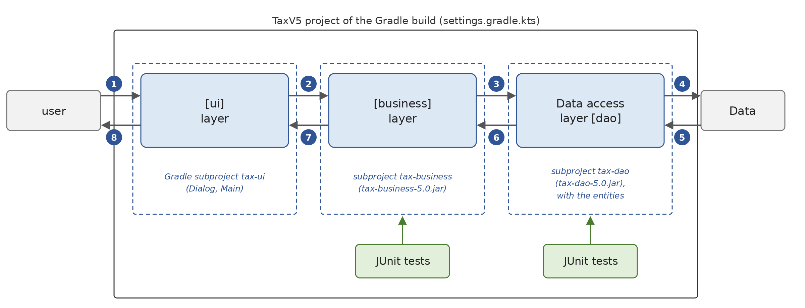

6. 分层架构
6.1. 简介
让我们回顾税款计算应用程序的最新版本（第 5 章的版本 3）。去掉枝节后，它的主程序具有如下结构（简化示意图）：
| // 创建 ITax 对象；所用的类取决于文件扩展名
val tax: ITax = try {
when (fileName.substringAfterLast('.').lowercase()) {
"json" -> JsonTax(fileName)
else -> FileTax(fileName)
}
} catch (e: TaxException) {
println("The following error occurred: [Code=${ErrorCode.decode(e.code)}, ...]")
exitProcess(1)
}
// 输入循环
while (true) {
print("Tax calculation parameters in the format: ...")
val parameters = readlnOrNull()?.trim() ?: ""
...
// 参数正确：我们计算税款
println("Tax=${tax.calculate(married == "y", nbChildren, salary)} euros")
}
|
该程序把大多数应用程序中都有的三类处理结合在了一起：
- 获取存储在文件、数据库等中的数据：第 1–9 行；
- 用户交互：第 13–14 行（输入）和第 17 行（输出）；
- 使用业务算法，即税款计算：第 17 行。这一计算此前由抽象类 [AbstractTax]，即 [FileTax] 和 [JsonTax] 的父类 完成：在版本 3 中，数据读取和计算仍然合并在同一个对象内部。
实践经验表明，把这些不同的处理步骤隔离到各自独立的类中，可以提高应用程序的可维护性。按这种方式组织的应用程序，其架构如下：

这种架构称为“三层架构”（three-tier architecture）。“tier”一词通常指应用程序中运行在不同机器上的部分。当各部分位于同一台机器上时，则改用“分层架构”（layered architecture）这一术语：
- [business] 层包含应用程序的业务规则。对于我们的应用程序，就是用于计算纳税人税款的规则。该层需要数据才能工作：
- 税率档，每年都会变化；
- 孩子的数量、纳税人的婚姻状况和年收入；
- 数据访问层，即 [dao] （DAO = Data Access Object，数据访问对象），提供已存储在文件或数据库中的数据。这包括税率档，就像应用程序的版本 3 中那样；
- 用户界面层，即 [ui] （UI = User Interface，用户界面），提供用户输入的数据并向用户显示结果。在这里，它涉及孩子的数量、婚姻状况和纳税人的年收入。
一般而言：
- [dao] 层负责访问持久化数据（文件、数据库）或非持久化数据（网络、传感器等）；
- [ui] 层负责与用户的交互（如果有用户的话）；
- 通过使用接口，这三个层彼此相互独立。
我们将重新审视已经研究过多次的 [Tax] 应用程序，为它赋予分层架构。首先，我们需要为应用程序的各个层定义接口。
6.2. [Tax] 应用程序的接口
请记住，接口定义了一组函数签名和属性。实现接口的类提供它们的实现。
让我们回到应用程序的分层架构：
在这类架构中，通常由用户主动发起。用户在 [1] 处发出请求，并在 [8] 处收到响应。这称为请求-响应周期。以计算纳税人的税款为例。这需要几个步骤：
- [ui] 层向用户询问其婚姻状况、孩子数量和年薪。这就是上面描述的 [1] 操作；
- 完成后，[ui] 层请求 [business] 层计算税款。为此，它把从用户那里收到的数据发送给该层。这就是操作 [2]；
- [business] 层需要某些信息才能完成其任务：税率档。它通过路径 [3, 4, 5, 6] 向 [dao] 层请求这些信息：[3] 是初始请求，[6] 是对该请求的响应；
- 拥有所需的全部数据后，[business] 层计算税款；
- 现在 [business] 层可以响应 [ui] 层在 [2] 中发出的请求。这就是 [7] 路径；
- [ui] 层对该结果进行格式化，然后呈现给用户。这就是路径 [8]；
- 可以设想，用户可能会运行税款模拟并希望保存它们。他们将使用同一路径 [1-8] 来完成。
从这一描述可以看出，一个层使用其右侧层的资源，而从不使用其左侧层的资源。来看两个相邻的层：

层 [A] 向层 [B] 发出请求。在最简单的情况下，一个层由一个类实现。但应用程序会随时间演进，层 [B] 可能先后拥有不同的实现类：[B1]、[B2]，等等。如果 [B] 层是 [dao] 层，它可能有一个最初的实现 [B1]，从文件中获取数据。几年后，你可能想把这些数据存放到数据库中：这时，你需要创建第二个实现类 [B2]。如果在最初的应用程序中，[A] 层直接使用 [B1] 类，我们就不得不部分重写 [A] 层的代码。例如，假设我们在 [A] 层中写了类似下面的代码：
| val b1: B1 = B1(...)
...
b1.getData(...)
|
- 第 1 行：创建 [B1] 类的一个实例；
- 第 3 行：向该实例请求数据。
如果新的实现类 [B2] 所含函数的签名与类 [B1] 相同，你就需要把所有的 [B1] 改为 [B2]。这是最好的情形，而如果你没有留意这些签名，这种情形是相当不可能的。实际上，类 [B1] 和 [B2] 通常具有不同的函数签名，这意味着 [A] 层的很大一部分必须重写。
可以通过在 [A] 层和 [B] 层之间插入一个接口来缓解这个问题。这样就在一个接口中固定了 [B] 层向 [A] 层暴露的函数签名。前面的示意图变为下面这样：

[A] 层不再直接与 [B] 层通信，而是与它的接口 [IB] 通信。在 [A] 层的代码中，[B] 层的实现类 [Bi] 现在只出现一次，即创建实现 [IB] 接口的对象时。此后，使用的是 [IB] 接口，而不是它的实现类。前面的代码变为：
| val ib: IB = B1(...)
...
ib.getData(...)
|
- 第 1 行：通过实例化 [B1] 类，创建了实现 [IB] 接口的 [ib] 实例。变量的类型是显式声明的：否则，类型推断会把类型 [B1] 赋给 [ib]；
- 第 3 行：向 [ib] 实例请求数据。
现在，如果我们把 [B] 层的实现 [B1] 替换为实现 [B2]，并且两个实现都符合同一个接口 [IB]，那么只需修改 [A] 层的第 1 行。这是一个重大的优势，仅凭这一点就足以证明在两个层之间系统地使用接口是合理的。
我们还可以更进一步，让 [A] 层完全独立于 [B] 层。在上面的代码中，第 1 行有问题，因为它硬编码了类名 [B1]。理想情况下，[A] 层应当接收 [IB] 接口的某个实现，而无需指定类名。这与上面的示意图是一致的：[A] 层与 [IB] 接口对接，没有理由要求它知道实现该接口的类的名称。
这正是依赖注入 （DI）所能做到的。前面的架构演变如下：

一个横切组件——依赖注入容器——创建实现各层的对象并把它们相互连接起来：它向 [A] 层传递对实现 [B] 层的对象的引用。于是 [A] 层的代码采用如下形式：
| // 层 [A] 通过其构造函数接收层 [B]
class A(private val ib: IB) {
fun work() {
...
ib.getData(...)
}
}
|
- 第 2 行：[A] 层通过其主构造函数接收一个实现 [ib] 接口 [IB] 的实例。参数前面的关键字
***[val]*** 使它成为该类的私有属性：在 Java 中需要字段、构造函数和赋值，而在 Kotlin 中只需一行。创建这个实例的不是 *[A]* 层，而是容器；
- 第 6 行：向 [ib] 实例请求数据。
实现类 [B1] 不再出现在 [A] 层代码的任何位置。当实现 [B1] 被新的实现 [B2] 取代时，[A] 层的代码不会有任何变化：唯一会变的，是应用程序中告诉容器由哪个类实现 [IB] 的那个唯一位置。这个位置甚至可以从配置文件中读取要使用的实现的名称。
在 JVM 上，依赖注入在 21 世纪初由 Spring 框架推广开来，当时它的配置是写在 XML 文件中的。Spring Framework 目前已发展到版本 7，仍然是行业标准，并且把 Kotlin 视为一等语言：它为其 API 提供了 Kotlin 扩展，而且 Kotlin 是其文档所使用的两种语言之一。它是 Spring Boot 的基础，我们将在第 13 章“Web 服务”中使用 Spring Boot。我们将在应用程序的版本 5 中使用它的容器（还有其他容器：CDI，即 Jakarta EE 标准，Google Guice，或者 Kotlin 专用的 Koin 和 Kodein）。“接口加依赖注入”的组合使各层彼此独立，从而显著提高了应用程序的可维护性。
让我们回到应用程序的分层架构。在简单的情况下，我们可以从 [business] 层入手来发现应用程序的接口。要运行，应用程序需要数据：
- 已经存在于文件、数据库中，或可通过网络获得。这些数据由 [dao] 层提供；
- 尚不存在。在这种情况下，由 [ui] 层提供，它从用户那里获取这些数据。
[dao] 层应当向 [business] 层提供什么接口？ [dao] 层必须向 [business] 层提供税率档。 在我们的应用程序中，[dao] 层使用现有数据，但不创建新数据。它的接口可以如下：
| package dao
import entities.TaxBracket
// [dao] 层的接口
interface ITaxDao {
// 税率档：只读属性
val taxBrackets: List<TaxBracket>
}
|
- 第 1 行：该接口位于 [dao] 包中。我们将看到，我们会把 [ITaxDao.kt] 文件存放在 [dao] 文件夹中；
- 第 9 行：[ITaxDao] 接口声明了 [taxBrackets] 属性，它向 [business] 层提供税率档。Kotlin 接口不仅可以声明函数，还可以声明属性：接口中的 [val] 属性是抽象的；每个实现类各自指定如何获得它的值。Java 是按照 JavaBeans 约定通过方法 [getTaxBrackets()] 来暴露只读数据的，而 Kotlin 则按它的本来面目来声明它：一个只读属性。从 Java 的角度看，这个属性实际上就是方法 [getTaxBrackets()]；
- 税率档以 [List<TaxBracket>] 列表而不是数组的形式给出。在 Kotlin 中，[List] 是只读接口：它没有 [add]、[set] 或 [remove]，这些方法属于 [MutableList] 接口（第 5 章）。因此，列表的接收者无法修改它，而数组的元素始终可以被接收者修改；
- 第 3 行：导入类型 [TaxBracket]，它定义在包 [entities] 中：
| package entities
import java.math.BigDecimal
// 税率档：属性只读的数据类
data class TaxBracket(val limit: BigDecimal, val coeffR: BigDecimal, val coeffN: BigDecimal)
|
税率档由一个数据类 （[data class]，第 4 章）表示，它是 Kotlin 中相当于 Java 记录的机制。编译器会生成属性 [limit]、[coeffR] 和 [coeffN]，以及函数 [equals]、[hashCode]、[toString]、[copy] 和 [component1]…[component3] （用于解构）。我们写 [TaxBracket(limit, coeffR, coeffN)] 来创建一个税率档。属性被声明为 [val]：税率档一旦创建就不能更改（数据类可以有 [var] 属性，但这不是常见做法）。这三个属性的类型都是 [BigDecimal]，即 Java 中表示精确十进制数的类，Kotlin 直接使用它：[Double] 无法精确表示 0.068 或 291.09。由于 *[BigDecimal] 本身是不可变的，因此税率档是完全不可变的。带有 [var] 属性的类则允许对其进行修改；我们将看到，这种不可修改性消除了一种较旧的 [business]* 层写法所带来的副作用。
[business] 层应当向 [ui] 层提供什么接口？让我们回顾这两个层之间的交互：
- [ui] 层向用户询问其婚姻状况、孩子数量和年薪。这是示意图中的操作 [1]；
- 完成后，[ui] 层请求 [business] 层计算税款。为此，它把从用户那里收到的数据发送给 [business] 层。这就是操作 [2]。
层 [business] 的接口可以是这样的：
| package business
// [business] 层的接口
interface ITaxBusiness {
fun calculateTax(married: Boolean, nbChildren: Int, salary: Int): Int
}
|
- 第 1 行：与 [business] 层相关的一切都放在 [business] 包中；
- 第 6 行：[ITaxBusiness] 接口只声明了一个函数，它根据纳税人的婚姻状况、孩子数量和年薪计算其税款。没有函数体的接口函数是抽象的，并且与任何没有可见性修饰符的 Kotlin 成员一样是公有的：无需写 [public abstract]。结果是 [Int]：以欧元为单位、不含分的税款。
现在我们来研究这种分层架构的第一个实现。
6.3. 示例应用程序——版本 4
6.3.1. 项目
版本 4 是一个由多个源文件组成的程序，不使用任何外部库。Kotlin 没有与 Java 的源代码启动器（[java Main.java]）简单对应的功能，该启动器在内存中编译多文件程序并执行它：多文件的 Kotlin 程序要先编译再执行。因此我们创建一个 Gradle 项目 [TaxV4]，它是本章 Gradle 构建（第 2 章）的子项目之一。[06-architectures] 文件夹包含本章的所有项目；它的 [settings.gradle.kts] 文件列出了它们：
| // 第 6 章：将本章所有项目组合在一起的 Gradle 构建
// 如果机器上找不到 jvmToolchain(25) 所要求的 JDK，Gradle 会自行下载
plugins {
id("org.gradle.toolchains.foojay-resolver-convention") version "1.0.0"
}
rootProject.name = "architectures"
// 子项目，用其路径指定：[TaxV5:tax-dao] 是 TaxV5/tax-dao 文件夹
include("DemoTests", "TaxV4", "TaxV5:tax-dao", "TaxV5:tax-business", "TaxV5:tax-ui")
|
- 第 3–6 行：该插件允许 Gradle 在机器上找不到 JDK 25 时自行下载它（第 2 章）；
- 第 8 行：根项目的名称；
- 第 11 行：本章的五个子项目。子项目由其路径标识，路径的各部分用冒号分隔：[TaxV5:tax-dao] 是 [TaxV5/tax-dao] 文件夹的子项目。我们将在后面讨论 [DemoTests] 以及版本 5 的三个子项目。
根项目中的文件 [build.gradle.kts] 声明了子项目所使用的插件及其版本，但并不应用它们：
| // 第 6 章：根项目。插件在此声明并指定版本，但不应用：
// 由子项目来应用它们
plugins {
kotlin("jvm") version "2.4.20" apply false
kotlin("plugin.spring") version "2.4.20" apply false
}
|
- 第 4 行：用于 JVM 的 Kotlin 插件，版本 2.4.20。对 [apply false] 的引用使它可供各子项目使用，子项目应用它时无需重复其版本；
- 第 5 行：版本 5 为 Spring 所需要的一个 Kotlin 编译器插件。我们将在需要时再作解释。
[TaxV4] 子项目具有如下目录结构。每个层占用一个文件夹：
| TaxV4/
build.gradle.kts the build file of the subproject
TaxData.txt the tax brackets
TaxDataInvalid.txt an incorrect bracket file
src/main/kotlin/
Main.kt integration of the layers
entities/
TaxBracket.kt
ErrorCode.kt
TaxException.kt
dao/
ITaxDao.kt
HardwiredTax.kt
FileTax.kt
business/
ITaxBusiness.kt
TaxBusiness.kt
ui/
Dialog.kt
|
- [entities] 文件夹包含 [ui]、[business]、和 [dao] 层所共有的类型：数据类 [TaxBracket]、异常 [TaxException]、以及其错误代码的枚举 [ErrorCode] ；
- [dao] 文件包含 [dao] 层的接口和类。我们将使用 [ITaxDao] 接口的两个实现：数据为硬编码的 [HardwiredTax] 类（版本 2），以及从文本文件读取数据的 [FileTax] 类（版本 3）。读取 JSON 文件（版本 3 中的另一种选择）将在版本 5 中介绍；
- 文件夹 [business] 包含 [business] 层的接口和类；
- 文件夹 [ui] 包含 [ui] 层的类；
- 文件 [Main.kt] 创建各个层并把它们连接在一起；
- 文件 [TaxData.txt] 包含 [dao] 层的 [FileTax] 实现所读取的税率档。它位于子项目的根目录，这是由 Gradle 启动的程序的当前目录。
在 Java 中，文件夹名称很重要：位于 [dao] 包中的类必须位于名为 [dao] 的文件夹中。Kotlin 更灵活：包就是文件中 [package] 指令所声明的那个包，与文件所在的文件夹无关。不过，惯例（IntelliJ、IDEA 和本课程都遵循）仍然是把文件组织到与包相对应的文件夹中：[tax.dao] 包中的文件放在 [tax/dao] 文件夹中（在所有包都以同一个根开头的项目中，这个公共根对应的文件夹直接省略）。另一方面，编译器生成的 [.class] 文件则始终按包来组织：虚拟机正是根据完整名称来定位类的。
文件 [Main.kt] 没有 [package] 指令：它属于没有名称的根包。它的函数 [main] 被编译成类 [MainKt]，这是子项目的构建文件分配给插件 [application] 的名称：
| // TaxV4：分层的 [Tax] 应用，单个项目，不使用外部库
plugins {
kotlin("jvm")
application
}
group = "examples.architectures"
version = "4.0"
repositories {
mavenCentral()
}
kotlin {
// 代码使用 JDK 25 编译和运行
jvmToolchain(25)
compilerOptions {
// 编译器警告视为错误
allWarningsAsErrors = true
// 函数参数名保留在字节码中
javaParameters = true
}
}
application {
// Main.kt 文件的 main 函数，该文件没有包：其类为 MainKt
mainClass = "MainKt"
}
tasks.named<JavaExec>("run") {
// 运行中的程序可以读取键盘
standardInput = System.`in`
}
// 在 Windows 上，由 Gradle（run、bootRun 等）启动的程序的屏幕输出以 UTF-8 编码，
// 否则带重音符号的字符在 IntelliJ IDEA 控制台或终端中会出现乱码
tasks.withType<JavaExec>().configureEach {
jvmArgs("-Dstdout.encoding=UTF-8", "-Dstderr.encoding=UTF-8")
}
|
- 第 2–4 行：子项目应用 Kotlin 插件（不带版本，版本由根项目提供）和 [application] 插件，后者添加了 [run] 任务；
- 第 7–8 行：项目详情；
- 第 14–21 行：编译器配置，与前几章相同；
- 第 25–27 行：主类 [MainKt]，不带包名。该子项目中只有一个程序：前几章中的 [main] 属性就不需要了；
- 第 30–32 行：程序从键盘读取输入；
- 第 35–38 行：由 Gradle 启动的程序以
UTF-8 输出，以便带重音的字符在 Windows 上能正确显示（第 2 章）。
与 Java 不同，Kotlin 允许从另一个包中导入根包的声明，只需不加前缀地写出其名称（[import declarationName]）。惯例仍然是只在那里放置主程序，而它不会被任何人导入。
在本章的文件夹中使用 [gradlew -q :TaxV4:run] 运行该程序：路径 [:TaxV4] 指向该子项目，任务 [run] 以子项目文件夹作为当前目录运行。IntelliJ IDEA 把 [06-architectures] 文件夹作为 Gradle 项目打开，并通过点击 [Main.kt] 中 [main] 函数旁边的绿色三角形来运行它。
6.3.2. 应用程序实体

我们把跨越多个层的类型称为实体。它们通常是封装来自 [dao] 层的数据的类。这些实体通常一直延伸到 [ui] 层。应用程序的实体有：前面已经介绍过的数据类 [TaxBracket]，以及异常 [TaxException]，还有它的错误代码枚举：
| package entities
// [dao] 层的错误码：每个码对应一位，因此可以组合
enum class ErrorCode {
ACCESS, LINE, FIELD1, FIELD2, FIELD3;
// 码所对应的位：ACCESS 为 1，LINE 为 2，FIELD1 为 4，FIELD2 为 8，FIELD3 为 16
val bit: Int
get() = 1 shl ordinal
companion object {
// 位组合中包含的各个码的名称，例如 24 对应 "FIELD2, FIELD3"
fun names(code: Int): String =
entries.filter { (code and it.bit) != 0 }.joinToString(", ") { it.name }
}
}
|
- 第 4 行：一个枚举（[enum class]）。与 Java 中一样，枚举的值是对象——[ErrorCode] 类的唯一实例——并且枚举可以有属性和方法；
- 第 5 行：五个错误代码。当列表后面还有其他成员时，结束列表的分号是必需的。属性 [ordinal] 继承自类 [Enum]，返回该值在列表中的位置：[ACCESS] 为 0，[FIELD3] 为 4；
- 第 8–9 行：每个代码都与一个二进制位相关联。[bit] 是一个计算属性：它没有字段；它的访问器 [get()]，在每次读取时都会计算它。Kotlin 没有移位运算符：[1 shl ordinal] （“shift left”，左移）等价于 Java 的 [1 << ordinal]，其值依次为 1、2、4、8 和 16。这些 2 的幂可以用中缀函数 [or] （Java 的 [|]）组合起来：代码 [FIELD2.bit or FIELD3.bit] （8 + 16 = 24）表示某一行的字段 2 和 3 不正确。异常的错误代码仍然是一个简单的整数，[dao] 层的所有实现都可以使用它；
- 第 11–14 行：函数 [names] 把位串中包含的代码名称转换出来——对于 24 得到“FIELD2, FIELD3”。它不使用枚举中的任何特定值：它被放在伴生对象中，并像 Java 静态方法一样调用，即 [ErrorCode.names(24)]。属性 [entries] （Kotlin 1.9）是枚举值的列表；它取代了每次调用都会创建新数组的函数 [values()]。[(code and it.bit) != 0] 在与 [it] 的值对应的位出现在 [code] 中时为真（[and] 相当于 Java 的 [&]）。随后，由 [filter] 筛选出的值由 [joinToString] 组装起来，使用分隔符 [", "] 和一个返回每个值的名称（[name]）的 lambda。该函数的函数体是一个表达式：函数没有花括号，其结果跟在 [=] 号之后。
| package entities
// 由 [dao] 层抛出的异常
// Kotlin 没有受检异常：任何方法都不必声明它
class TaxException(
message: String,
// 原始异常（如果有）
cause: Throwable? = null,
// 错误码（ErrorCode 位的组合）
val code: Int = 0,
) : RuntimeException(message, cause)
|
- 第 5 行：应用程序专用的异常派生自类 [RuntimeException]。在 Kotlin 中，不存在在受检异常与非受检异常之间进行选择的问题：该语言没有受检异常（第 3 章），没有函数声明它所抛出的异常，也没有调用者被要求捕获它们。派生自
*[RuntimeException]* 而不是 *[Exception]* 仍然是标准做法，因为这能保证从 Java 代码来看，异常的处理方式是一致的；
- 第 6–10 行：主构造函数有三个参数。[message] 和 [cause] 是简单参数，被传给父类的构造函数（第 11 行）；[code] 声明为 [val]，因此也是该异常的只读属性。原因（即原始异常，如果有的话）将可通过属性 [cause]，（继承自 [Throwable]）访问；
- 第 8–10 行：得益于参数默认值，这一个构造函数取代了 Java 版本中的两个构造函数——一个带消息和代码，另一个还带原因。借助具名实参，没有原因时我们写 [TaxException(message, code = 2)] ，有原因时写 [TaxException(message, e, 1)] ；
- 第 10 行：允许在最后一个参数后面加逗号（“尾随逗号”）；这使添加参数更加方便；
- 异常是可序列化的（类 [Throwable] 实现了接口 [Serializable]）。Java 版本声明了一个 [serialVersionUID] 字段，以避免 [javac -Xlint:all] 发出警告；Kotlin 编译器不会发出这个警告，所以我们不声明这个字段。
在这个版本中，只有 [dao] 层中的 [FileTax] 类会抛出 [TaxException]。
6.3.3. [dao] 层
让我们回顾 [dao] 层的接口：
| package dao
import entities.TaxBracket
// [dao] 层的接口
interface ITaxDao {
// 税率档：只读属性
val taxBrackets: List<TaxBracket>
}
|
我们以两种不同的方式实现这个接口。首先是 [HardwiredTax] 类：
| package dao
import entities.TaxBracket
// 数据“硬编码”的 [dao] 层
class HardwiredTax : ITaxDao {
// 税率档（2003 年收入的 2004 年税率表）：只读列表
override val taxBrackets: List<TaxBracket> = listOf(
bracket("4962", "0", "0"),
bracket("8382", "0.068", "291.09"),
bracket("14753", "0.191", "1322.92"),
bracket("23888", "0.283", "2668.39"),
bracket("38868", "0.374", "4846.98"),
bracket("47932", "0.426", "6883.66"),
bracket("0", "0.481", "9505.54"),
)
}
// 由字符串构建的税率档：BigDecimal 是精确的
private fun bracket(limit: String, coeffR: String, coeffN: String) =
TaxBracket(limit.toBigDecimal(), coeffR.toBigDecimal(), coeffN.toBigDecimal())
|
- 第 6 行：类 [HardwiredTax] 实现了接口 [ITaxDao]。在 Kotlin 中，冒号既用于类继承，也用于接口实现：没有 [implements] 关键字。请注意，接口的名称后面不带括号，而父类的名称后面要带上其构造函数的实参（[RuntimeException(message, cause)]）：接口没有构造函数；
- 第 9–16 行：接口属性的实现。关键字 [override] 是必需的：编译器会验证该属性确实实现了接口的某个成员，类似于 Java 中可选的注解 [@Override]。该属性在声明处由 [listOf] 初始化，它创建一个只读列表。同样，允许在最后一个元素后面加逗号；
- 第 20–22 行：一个根据三个字符串创建税率档的私有函数。它声明在文件级别，位于类的外部：[private] 使它只在文件 [HardwiredTax.kt] 内可见。标准库中的扩展函数 [toBigDecimal] 把字符串转换为 [BigDecimal]；这就是构造函数 [BigDecimal(String)]。由字符串构造的 [BigDecimal] 是精确的：["0.068".toBigDecimal()] 恰好是 0.068，而 [BigDecimal] 由 [Double] 构造时会继承其不精确性：[0.068.toBigDecimal()]（通过把 [Double] 转换为字符串得到）确实得到 0.068，但 [(0.1 + 0.2).toBigDecimal()] 得到的是 0.30000000000000004。函数结果的类型 [TaxBracket] 由跟在 [=] 号后面的表达式推断得出。
[ITaxDao] 接口还由 [FileTax] 类实现，该类从文本文件中读取税率档。[TaxData.txt] 文件如下：
| 4962:0:0
8382:0.068:291.09
14753:0.191:1322.92
23888:0.283:2668.39
38868:0.374:4846.98
47932:0.426:6883.66
0:0.481:9505.54
|
每一行以 [limit:coeffR:coeffN] 的格式描述一个税率档。数字使用小数点书写，与系统语言无关；这保证了文件在所有机器上都可读。这些值取自 2003 年收入对应的 2004 年税率表，原样保留：这只是一个练习。类 [FileTax] 如下：
| package dao
import entities.ErrorCode.ACCESS
import entities.ErrorCode.FIELD1
import entities.ErrorCode.FIELD2
import entities.ErrorCode.FIELD3
import entities.ErrorCode.LINE
import entities.TaxException
import entities.TaxBracket
import java.io.IOException
import java.math.BigDecimal
import java.nio.file.NoSuchFileException
import kotlin.io.path.Path
import kotlin.io.path.exists
import kotlin.io.path.readLines
// 从文本文件中读取税率档的 [dao] 层
// 每档一行：limit:coeffR:coeffN（小数点）
class FileTax(val fileName: String) : ITaxDao {
// 税率档，在构造对象时读取
override val taxBrackets: List<TaxBracket>
init {
// 读取文件（相对于当前文件夹）：行列表
val lines = try {
val path = Path(fileName)
if (!path.exists()) {
throw NoSuchFileException(fileName, null, "The file [$fileName] does not exist")
}
path.readLines()
} catch (e: IOException) {
// 文件访问错误：它被包装在 TaxException 中
throw TaxException("Error while reading the file $fileName", e, ACCESS.bit)
}
// 每个非空行对应一档；行从 1 开始编号
taxBrackets = lines.withIndex()
.filter { it.value.isNotBlank() }
.map { (index, line) -> bracket(index + 1, line.trim()) }
}
// 由一行描述的税率档，如果该行不正确则抛出 TaxException
private fun bracket(lineNumber: Int, line: String): TaxBracket {
// 将行拆分为以 : 分隔的字段（两侧可带空格）
val fields = line.split(SEPARATOR)
if (fields.size != 3) {
throw TaxException("Line no. $lineNumber is incorrect: [$line]", code = LINE.bit)
}
// 3 个字段的转换：字段不正确则为 null
val (limit, coeffR, coeffN) = fields.map(::number)
if (limit == null || coeffR == null || coeffN == null) {
// 每个不正确的字段都会把它的位加入错误码
var code = 0
if (limit == null) code = code or FIELD1.bit
if (coeffR == null) code = code or FIELD2.bit
if (coeffN == null) code = code or FIELD3.bit
throw TaxException("Line no. $lineNumber is incorrect: [$line]", code = code)
}
// 三个字段都正确：此处它们的类型是 BigDecimal 而不是 BigDecimal?
return TaxBracket(limit, coeffR, coeffN)
}
companion object {
// 字段分隔符和数字的形式（正则表达式）
private val SEPARATOR = Regex("""\s*:\s*""")
private val NUMBER = Regex("""\d+(\.\d+)?""")
// 用数字和小数点书写的正数或零；不正确则为 null
private fun number(field: String): BigDecimal? =
if (NUMBER.matches(field)) field.toBigDecimal() else null
}
}
|
- 第 3–7 行：Kotlin 没有静态导入（Java 的 [import static]）：标准的 [import] 指令同样可以导入类、枚举值和函数。这样我们就可以写 [FIELD1] 而不是 [ErrorCode.FIELD1]；
- 第 13–15 行：[kotlin.io.path] 包中的函数（第 5 章），它们是对 Java 函数 API 和 NIO 的补充；
- 第 19 行：主构造函数接收税率档文件的名称。该参数声明为 [val]，因此也是一个公有的只读属性 [fileName]：它取代了 Java 版本中的字段和方法 [getFileName] ；
- 第 22 行：接口属性。它在声明处没有初始化：编译器会验证它在下面的 [init] 块中被赋值，而且只赋值一次；
- 第 24–39 行：[init] 块在对象构造时执行。它读取文件，然后从中提取税率档；
- 第 26–34 行：在 Kotlin 中，
[try] 是一个表达式：它的值要么是 [try]*** 块中最后一个表达式的值——这里是文件各行的列表——要么是 [catch] 块的值。[catch] 块抛出一个异常：它的类型是 [Nothing]，即永不返回值的表达式的类型，而变量 [lines] 的类型是 [List<String>]*；
- 第 27 行：[Path] 函数（位于 [kotlin.io.path] 中）创建文件路径；它等价于 [Path.of]。相对路径是相对于当前目录的；
- 第 28–29 行：如果文件不存在，就会抛出带有明确消息的 [NoSuchFileException] （[java.nio.file] 包）。它的三参数构造函数接收文件名、可能存在的第二个文件的名称（这里是 [null]）以及错误原因。如果没有这个检查，读取操作本身会抛出 [NoSuchFileException]，其消息将只包含文件名；
- 第 31 行：[readLines] 扩展函数使用 UTF-8 读取整个文件，并返回由其各行组成的列表。它自己负责打开和关闭文件。对于大文件，我们更倾向于使用 [useLines] 进行基于流的读取；
- 第 32–34 行：所有输入/输出错误都源自 [IOException]：文件缺失（[NoSuchFileException]）、权限不足（[AccessDeniedException]）、文件不是 UTF-8 格式（[MalformedInputException]），等等。该错误被封装在代码为 [TaxException] 的 [ACCESS] 异常中；原始异常作为原因（第二个实参）被保留；
- 第 37–39 行：读取各行和解析各行是相互独立的操作，这在 Java 中并非如此。[withIndex] 把每一行与它的索引（从 0 开始）关联到一个 [IndexedValue] 对象中，该对象具有属性 [index] 和 [value]；[filter] 去除空行或仅由空格组成的行（[isNotBlank]），同时不会丢失其余行的索引；[map] 把其余的每一行转换为一个税率档。lambda 函数 [map] 把它的参数 [IndexedValue] 解包为两个分量 [(index, line)]。行号 [index + 1]，以及去除了首尾空格的行（[trim]）被传给函数 [bracket]。[map] 的结果是一个只读的 [List]；
- 第 43 行：该函数返回由某一行描述的税率档，如果该行无效则抛出 [TaxException] 。这个异常不是 [IOException]：它被原样传回给调用者；
- 第 45 行：该行由 [split] 使用正则表达式 [SEPARATOR] 拆分：分隔符是冒号，其两侧可以有空格。注意：在 Kotlin 中，向
***[split(":")]** 传入字符串时，会按字符串本身进行拆分，而不把它解释为正则表达式；为此必须传入 *[Regex] 对象；
- 第 46–47 行：没有三个字段的行是无效的。错误代码通过具名实参 [code = LINE.bit] 传递：没有原因，参数 [cause] 保留其默认值 [null]；
- 第 50 行：转换这三个字段。[fields.map(::number)] 把函数 [number] 应用于每个字段（[::number] 是函数引用；参见第 7 章），并返回一个由三个 [BigDecimal?] 值组成的列表，解构赋值再把它们分配给三个变量；
- 第 51–57 行：如果某个字段不正确，则每个不正确的字段都会使用中缀函数 [or] 把自己的位加入错误代码，并抛出 [TaxException]。它的消息给出行号和该行的内容；
- 第 60 行：此时，编译器知道 [limit]、[coeffR] 和 [coeffN] 都不是 [null]；否则，前面的 [if] 就会抛出异常。通过智能转换，这些类型为 [BigDecimal?] 的变量被视为 [BigDecimal]，即 [TaxBracket] 的构造函数所期望的类型：既不需要 [!!] 也不需要任何转换；
- 第 65–66 行：这两个正则表达式在伴生对象中一次性创建，而不是每次调用时创建。它们写成原始字符串（["""..."""]），其中反斜杠不需要重复书写：[\s*] 匹配零个或多个空格；
- 第 69–70 行：把字段转换为 [BigDecimal]。[NUMBER.matches(field)] 验证整个字符串与正则表达式 [\d+(\.\d+)?] 匹配：一个或多个数字，后面可以跟一个句点和更多数字。因此，“0,191”会被拒绝，任何负数也是如此。函数 [toBigDecimal] 不依赖于用户的语言：它始终要求使用小数点。出错时，该函数返回 [null]，因此其类型为 [BigDecimal?]。我们本可以使用 [toBigDecimalOrNull]，它对无效字符串返回 [null] ，但它也接受“-1”或“1e3”。
6.3.4. [business] 层
让我们回顾该层的接口：
| package business
// [business] 层的接口
interface ITaxBusiness {
fun calculateTax(married: Boolean, nbChildren: Int, salary: Int): Int
}
|
它的实现 [TaxBusiness]，如下：
| package business
import dao.ITaxDao
import java.math.BigDecimal
import java.math.MathContext
// [business] 层通过其构造函数接收 [dao] 层
class TaxBusiness(dao: ITaxDao) : ITaxBusiness {
// 税率档，一次性向 [dao] 层请求
private val brackets = dao.taxBrackets
// 税款计算
override fun calculateTax(married: Boolean, nbChildren: Int, salary: Int): Int {
// 检查参数
require(nbChildren >= 0) { "nbChildren ($nbChildren) must be positive or zero" }
require(salary >= 0) { "salary ($salary) must be positive or zero" }
// 份数：BigDecimal 的 + 和 * 运算符是精确的
var shares = nbChildren.toBigDecimal() * HALF + (if (married) 2 else 1).toBigDecimal()
if (nbChildren >= 3) {
shares += HALF
}
// 应税收入和家庭系数
val income = ALLOWANCE * salary.toBigDecimal()
val qf = income.divide(shares, MathContext.DECIMAL128)
// 税率档：第一个其上限大于或等于 QF 的档，
// 如果都不符合则取最后一档（不使用其上限）
val bracket = brackets.dropLast(1).firstOrNull { qf <= it.limit } ?: brackets.last()
// 税额（整数部分）
return (income * bracket.coeffR - shares * bracket.coeffN).toInt()
}
private companion object {
// 半份，以及由工资得出应税收入的系数
val HALF = BigDecimal("0.5")
val ALLOWANCE = BigDecimal("0.72")
}
}
|
- 第 8 行：类 [TaxBusiness] 实现了接口 [ITaxBusiness]。[business] 层必须与 [dao] 层协作：因此它通过主构造函数接收对实现 [dao] 接口 [ITaxDao] 的对象的引用。该参数没有声明为 [val]：它只在对象构造期间使用，不会成为属性；
- 第 11 行：在对象构造时，[business] 层一次性地向 [dao] 层请求税率档，并把它们存放在一个私有的只读属性中。它的类型 [List<TaxBracket>] 是推断出来的。请注意，[business] 层只通过 它的 [dao] 层的 [ITaxDao] 接口来了解它：它不知道税率档来自代码、文件，还是后面将用到的数据库；
- 第 14 行：接口函数的实现，带有必需的关键字 [override]；
- 第 16–17 行：[business] 层不信任它的调用者。标准库中的函数 [require] （第 3 章）在条件为假时抛出 [IllegalArgumentException] ；异常消息由 lambda 计算，而该 lambda 只在出错时才执行。该消息指出了不正确的参数；
- 第 19–21 行：份数。[nbChildren.toBigDecimal()] 把整数转换为 [BigDecimal]。像 [BigDecimal] 这样的 Java 类没有算术运算符，但 Kotlin 标准库通过标记为 [operator] 的扩展函数（第 4 章）为它添加了这些运算符：[a + b]、[a - b]、和 [a * b] 分别调用 [add]、[subtract] 和 [multiply]，而 [shares += HALF] 在 Java 中写作 [shares = shares.add(HALF)]。由于 [BigDecimal] 是不可变的，每个运算都会返回一个新对象：这就是 [shares] 是一个变量（[var]）的原因。孩子数量乘以 0.5 而不是除以 2，原因见下文：3 个孩子等于 1.5 份；
- 第 24–25 行：应纳税所得额和家庭商数。除以份数可能产生无限多位小数（例如除以 3）：如果没有指定任何限制，[divide] 方法就会抛出 [ArithmeticException]。[MathContext.DECIMAL128] 把结果限制为 34 位有效数字；
- 第 28 行：我们在除最后一个税率档之外的所有税率档（[dropLast(1)]）中，查找第一个阈值大于或等于家庭商数的收入档。[firstOrNull] 返回第一个满足条件的元素，如果没有则返回 [null] ；然后 Elvis 运算符 [?:] 把 [null] 替换为最后一个税率档 [brackets.last()]，其上限（0）不会被使用。[BigDecimal] 类实现了 [Comparable] 接口：Kotlin 把 [qf <= it.limit] 翻译为 [qf.compareTo(it.limit) <= 0]。这一行取代了 Java 版本中的 [for] 循环和 [break] ；
- 第 30 行：税款。[toInt()] 函数（属于 [BigDecimal] ，即 Java 方法 [intValue()]）返回结果的整数部分；
- 第 33–36 行：两个常量，存放在私有伴生对象中。它们不能被声明为 [const]：只有基本类型和字符串才可以。
关于 [/] 运算符的说明。标准库也为 [BigDecimal] 定义了 [/] 运算符，但它调用的是 [divide(other, RoundingMode.HALF_EVEN)]：结果的小数位数与被除数相同。因此，[3.toBigDecimal() / BigDecimal.TWO] 的计算结果是 2，而不是 1.5，而 [3.toBigDecimal().divide(BigDecimal.TWO)] 的结果确实是 1.5。这就是上面的代码避免使用该运算符的原因：它乘以 0.5，并显式地调用带有 [divide] 的 [MathContext]。使用 [BigDecimal] 的函数时，最好始终确切地了解除法运算究竟做了什么。
过去常见的做法是在查找之前修改最后一个税率档的上限（类似 [brackets[brackets.size - 1].limit = qf + 1]），使查找循环总能停止。这条指令修改了由 [dao] 层提供的数组：这是对所有层共享的数据产生的副作用。在这里我们再也不能这样写了：[limit] 属性（属于 [TaxBracket] ）是只读的，包含税率档的列表也是只读的。现代代码在没有合适的上限时只是简单地取最后一个税率档，而不修改它所接收的数据。
6.3.5. [ui] 层
在版本 2 和版本 3 中，用户界面写在主程序里，位于计算对象创建之后。唯一的区别在于这个对象是如何创建的。现在我们把这个用户界面隔离到 [ui] 层中，它只通过 [business] 层的接口来了解该层：
| package ui
import business.ITaxBusiness
// 与用户的控制台对话：它只知道 [business] 层的接口
object Dialog {
// 向用户提出的问题
private const val QUESTION =
"Tax calculation parameters in the format: Married (y/n) NbChildren Salary, or nothing to stop: "
// 输入不正确时显示的帮助
private val SYNTAX = """
syntax: Married NbChildren Salary
Married: y for married, n for not married
NbChildren: number of children
Salary: annual salary in euros
""".trimIndent()
// 一个或多个空格
private val SPACES = Regex("""\s+""")
// 对话循环：输入参数、计算、显示
fun run(business: ITaxBusiness) {
while (true) {
// 我们询问税款计算的参数；流结束时的 null 视为无输入
print(QUESTION)
val parameters = readlnOrNull()?.trim() ?: ""
// 有事要做吗？
if (parameters.isEmpty()) {
break
}
// 检查参数的数量
val fields = parameters.split(SPACES)
if (fields.size != 3) {
println(SYNTAX)
continue
}
// married
val married = fields[0].lowercase()
if (married != "y" && married != "n") {
println("$SYNTAX\nIncorrect Married argument: type y or n")
continue
}
// 子女数量：如果字段不是整数则为 -1
val nbChildren = fields[1].toIntOrNull() ?: -1
if (nbChildren < 0) {
println("$SYNTAX\nIncorrect NbChildren argument: type a positive or zero integer")
continue
}
// salary
val salary = fields[2].toIntOrNull() ?: -1
if (salary < 0) {
println("$SYNTAX\nIncorrect Salary argument: type a positive or zero integer")
continue
}
// 参数正确：我们请求 [business] 层进行计算
println("Tax=${business.calculateTax(married == "y", nbChildren, salary)} euros")
}
}
}
|
- 第 6 行：该对话没有自己的状态。在 Java 中，我们创建了一个名为 [final] 的类，带有私有构造函数，只包含静态成员。Kotlin 为此使用对象声明（[object]，第 4 章）：[Dialog] 既是一个类，也是它唯一的实例，在首次使用时创建。它的函数像静态方法一样被调用：[Dialog.run(business)]；
- 第 9–10 行：向用户提出的问题，一个私有常量（[const val]）；
- 第 13–18 行：帮助消息是一个原始字符串，以三个引号界定。它可以跨越多行；[trimIndent] （第 5 章）会去除各行的公共缩进，以及第一行和最后一行（如果它们为空）：这样文本的开头和结尾都没有换行。[trimIndent] 的结果是在运行时计算的：因此该字符串不能被声明为 [const]；
- 第 24 行：函数 [run] 以其接口 [business] 的形式接收 [ITaxBusiness] 层。它对实现该接口的类以及 [dao] 层一无所知；
- 第 27–28 行：问题由 [print] 显示，不带换行，然后 [readlnOrNull] 从键盘读取一行。在输入流结束时它返回 [null] ；此时对 [?.trim()] 的安全调用同样返回 [null]，Elvis 运算符再把它替换为空字符串：流的结束与空行一样会终止对话；
- 第 34 行：输入的行按空格拆分；正则表达式 [\s+] （一个或多个空格）会忽略多个连续的空格；
- 第 40–41 行：在 Kotlin 中，运算符 [] （以及 [!=]）比较字符串的内容：它调用 [equals]*。比较引用的是 *[=] 运算符。Java 中 [==] 比较引用所带来的陷阱在这里并不存在；
- 第 46–54 行：孩子数量和工资必须是正整数或零。如果字段不是整数，[toIntOrNull] 就返回 [null] ，随后 Elvis 运算符把 [null] 替换为 -1。这样，负数和无效输入就被同一个检查拒绝了。Java 版本中的 [integer] 方法，连同它针对 [try]/[catch] 的 [NumberFormatException] 变体，已经过时了；
- 第 58 行：参数是正确的：向 [business] 层请求计算。该调用直接写在字符串模板中，位于 [${...}] 之间。
6.3.6. 整合各层
剩下要做的就是创建各个层并把它们连接在一起。这就是主程序 [Main.kt] 的职责：
| import dao.FileTax
import dao.HardwiredTax
import dao.ITaxDao
import entities.ErrorCode
import entities.TaxException
import business.ITaxBusiness
import business.TaxBusiness
import ui.Dialog
import kotlin.system.exitProcess
// 各层的集成：这是唯一指明实现类名称的地方
// 参数："hardwired" 对应 HardwiredTax，
// 否则为 FileTax 所读取的文件名（默认为 TaxData.txt）
fun main(args: Array<String>) {
val source = args.firstOrNull() ?: "TaxData.txt"
val business: ITaxBusiness = try {
// 创建 [dao] 层
val dao: ITaxDao = if (source == "hardwired") HardwiredTax() else FileTax(source)
// 创建接收 [dao] 层的 [business] 层
TaxBusiness(dao)
} catch (e: TaxException) {
// 显示错误并以退出码 1 停止程序
val origin = e.cause?.let { ", original exception: ${it.message}" } ?: ""
println("The following error occurred: [Code=${ErrorCode.names(e.code)}, " +
"Message=${e.message}$origin]")
exitProcess(1)
}
// [ui] 层：与用户的对话
Dialog.run(business)
}
|
- 第 1–9 行：该文件不包含 [package] 指令；它的导入指定了来自其他四个包的类；
- 第 14 行：函数 [main] 在数组 [args] 中接收命令行实参。该实参用于选择 [dao] 层的实现：[hardwired] 表示类 [HardwiredTax]，否则是类 [FileTax] 所读取的文件名，默认值为 [TaxData.txt] ；
- 第 15 行：[firstOrNull] 返回第一个实参，如果没有则返回 [null] ，Elvis 运算符会把它替换为默认的文件名；
- 第 16 行：变量 [business] 由一个 [try] 表达式初始化。它的类型是显式声明的：它是接口 [ITaxBusiness]，而不是类型推断会得出的类 [TaxBusiness] ；
- 第 18 行：创建 [dao] 层。[if] 是一个表达式：它的值是两个实现中的某一个。这是程序中唯一提到类 [HardwiredTax] 和 [FileTax] 名称的地方；
- 第 20 行：创建 [business] 层，它接收 [dao] 层。这是 [try] 块中的最后一个表达式，因此也是该块的值；
- 第 21–26 行：创建 [dao] 层可能会抛出 [TaxException]。此时会显示一条错误，连同原始异常的消息（如果有），然后程序以退出码 1 终止。错误代码通过 [ErrorCode.names] 函数以纯文本形式显示。如果 [e.cause] 不是 [null]，[let] 就构造出原始异常的描述；否则，Elvis 运算符返回空字符串；
- 第 26 行：标准库中的函数 [exitProcess] 调用 [System.exit]。它的返回类型是 [Nothing]：编译器知道它永远不会返回控制权，因此知道 [catch] 块不会产生任何值。于是 [try] 表达式的类型是 [ITaxBusiness]。Java 版本必须在 [return] 之后添加一条永远不会被执行的 [System.exit(1)] 语句，这样编译器才能确认变量 [business] 已被初始化；
- 第 30 行：各层已准备就绪：[ui] 层与用户交互。
6.3.7. 运行结果
在本章的文件夹中，使用文件 [TaxData.txt] （实现 [FileTax]），并测试对用户输入的验证（在本章的结果中，用户的输入是通过输入重定向提供给程序的，然后放在用户键入它的那些问题之后）：
| > gradlew -q :TaxV4:run
Tax calculation parameters in the format: Married (y/n) NbChildren Salary, or nothing to stop: y 2 60000
Tax=4282 euros
Tax calculation parameters in the format: Married (y/n) NbChildren Salary, or nothing to stop: n 3 60000
Tax=4282 euros
Tax calculation parameters in the format: Married (y/n) NbChildren Salary, or nothing to stop: x 2 60000
syntax: Married NbChildren Salary
Married: y for married, n for not married
NbChildren: number of children
Salary: annual salary in euros
Incorrect Married argument: type y or n
Tax calculation parameters in the format: Married (y/n) NbChildren Salary, or nothing to stop: y 2
syntax: Married NbChildren Salary
Married: y for married, n for not married
NbChildren: number of children
Salary: annual salary in euros
Tax calculation parameters in the format: Married (y/n) NbChildren Salary, or nothing to stop: y -2 60000
syntax: Married NbChildren Salary
Married: y for married, n for not married
NbChildren: number of children
Salary: annual salary in euros
Incorrect NbChildren argument: type a positive or zero integer
Tax calculation parameters in the format: Married (y/n) NbChildren Salary, or nothing to stop: y 2 60000€
syntax: Married NbChildren Salary
Married: y for married, n for not married
NbChildren: number of children
Salary: annual salary in euros
Incorrect Salary argument: type a positive or zero integer
Tax calculation parameters in the format: Married (y/n) NbChildren Salary, or nothing to stop:
|
使用 [HardwiredTax] 实现。程序实参通过 [--args] 选项传给 [run] 任务：
| > gradlew -q :TaxV4:run --args="hardwired"
Tax calculation parameters in the format: Married (y/n) NbChildren Salary, or nothing to stop: y 2 60000
Tax=4282 euros
Tax calculation parameters in the format: Married (y/n) NbChildren Salary, or nothing to stop: y 3 60000
Tax=2959 euros
Tax calculation parameters in the format: Married (y/n) NbChildren Salary, or nothing to stop:
|
使用一个不存在的文件：
| > gradlew -q :TaxV4:run --args="TaxDataMissing.txt"
The following error occurred: [Code=ACCESS, Message=Error while reading the file TaxDataMissing.txt, original exception: TaxDataMissing.txt: The file [TaxDataMissing.txt] does not exist]
|
错误代码是 [ACCESS]，并显示了原始异常 [NoSuchFileException] 的消息：它由文件名以及传给其构造函数的原因组成。程序以退出码 1 退出：随后 Gradle 报告任务 [run] 失败，并附带几行额外的信息，这里不再重现。
使用下面的文件 [TaxDataInvalid.txt]，其中第 3 行使用了小数逗号：
| 4962:0:0
8382:0.068:291.09
14753:0,191:1322,92
23888:0.283:2668.39
|
我们得到：
| > gradlew -q :TaxV4:run --args="TaxDataInvalid.txt"
The following error occurred: [Code=FIELD2, FIELD3, Message=Line no. 3 is incorrect: [14753:0,191:1322,92]]
|
第 3 行的字段 2 和 3 不正确：错误代码合并了 [FIELD2] 和 [FIELD3] 的位，而 [ErrorCode.names] 函数将其显示为“FIELD2, FIELD3”。
6.3.8. 结论
分层架构和接口的使用为我们的应用程序带来了一定程度的灵活性。这一点在主程序创建 [dao] 层和 [business] 层的方式中体现得很明显：
| // 创建 [dao] 层
val dao: ITaxDao = if (source == "hardwired") HardwiredTax() else FileTax(source)
// 创建接收 [dao] 层的 [business] 层
TaxBusiness(dao)
|
更改 [dao] 层的实现只影响第 2 行。各层创建之后，两种情况下 [ui] 层的代码是相同的：在那里，[business] 层是通过其 [ITaxBusiness] 接口而不是其实现类来操作的。
[business] 层中同样体现出这种灵活性：它是基于对 [dao] 层接口的引用构建的。因此，更改后者的实现对 [business] 层没有任何影响。这就是为什么我们唯一的 [TaxBusiness] 类无需修改就能与 [dao] 层的两种不同实现一起工作。
6.4. 示例应用程序 - 版本 5

这个新版本以前一个版本为基础，有以下变化：
- [dao] 层和 [business] 层各自放在一个生成库（JAR 文件）的 Gradle 子项目中，并使用单元测试框架 JUnit 进行测试；
- [dao] 层新增第三个实现 [JsonTax]，它使用 Jackson 库从 JSON 文件中读取税率档；
- 各层的整合由 Spring 的依赖注入容器负责，而 [dao] 层的实现则从配置文件中选择。
在大型项目中，多名开发人员共同开发同一个应用程序。分层架构有利于这种工作方式：由于各层通过定义明确的接口相互通信，负责某一层的开发人员无需担心其他开发人员在其他层上的工作。只要求每个人都遵守这些接口。
因此，要测试 [business] 层，开发人员需要 [dao] 层的一个实现。在该实现完成之前，开发人员可以使用 [dao] 层的一个虚设实现，只要它遵守 [ITaxDao] 接口即可。这是分层架构的另一个优点：[dao] 层的延误不会妨碍对 [business] 层进行测试。模拟实现还有一个优点，就是比真正的 [dao] 层更容易搭建，后者可能需要 DBMS、网络连接等。
[dao] 层一旦完成并通过测试，就以库（JAR 文件）而不是需要复制的源代码的形式提供给 [business] 层的开发人员。最终，应用程序以一个主程序（来自 [ui] 层的程序）和若干类库（其他各层）的形式交付。
6.4.1. 版本 5 的 Gradle 子项目
版本 5 由本章 Gradle 构建的三个子项目组成，每层一个，位于 [TaxV5] 文件夹中。测试并不构成单独的项目：Gradle 的约定（与 Maven 相同）把子项目的测试放在它的 [src/test/kotlin] 文件夹中。它们由 Gradle 编译和运行，但不属于子项目的 JAR 文件。由此得到如下目录结构：
| TaxV5/
tax-dao/ subproject: entities and [dao] layer (jar)
build.gradle.kts
TaxData.txt
TaxData.json
TaxDataInvalid.txt an incorrect bracket file, for the tests
src/main/kotlin/tax/entities/
TaxBracket.kt
TaxException.kt
src/main/kotlin/tax/dao/
ITaxDao.kt
HardwiredTax.kt
FileTax.kt
JsonTax.kt
src/test/kotlin/tax/dao/
DaoTests.kt JUnit tests
TrialDao.kt trial program
tax-business/ subproject: [business] layer (jar)
build.gradle.kts
src/main/kotlin/tax/business/
ITaxBusiness.kt
TaxBusiness.kt
src/test/kotlin/tax/business/
BusinessTests.kt JUnit tests
TrialBusiness.kt trial program
tax-ui/ subproject: [ui] layer and integration of the layers
build.gradle.kts
tax.properties configuration files
tax-json.properties
tax-hardwired.properties
tax-error.properties
tax-beans.xml Spring XML configuration
tax-beans-error.xml
TaxData.txt
TaxData.json
src/main/kotlin/tax/ui/
Dialog.kt
Main.kt
MainXml.kt
TaxConfig.kt
MainConfig.kt
|
现在包带有前缀 [tax]：[tax.entities]、[tax.dao]、[tax.business]、[tax.ui]。子项目 [tax-dao] 和 [tax-business] 实际上将被其他项目复用（第 10 章至第 13 章），而同一个程序所用的两个库不能定义两个具有相同完全限定名的类。在专业项目中，包以组织的反向域名作为前缀（[org.springframework]、[tools.jackson]……），这就保证了名称的唯一性。
[TaxV5] 文件夹本身没有构建文件：它只是一个简单的分组文件夹，Gradle 把它视为一个空项目 [:TaxV5]，是本章 [settings.gradle.kts] 文件中声明的三个子项目 [:TaxV5:tax-dao]、[:TaxV5:tax-business] 和 [:TaxV5:tax-ui] 的父项目。Maven 需要一个父项目来对模块进行分组，而 Gradle 只需要这个文件。每个子项目都有自己的 [build.gradle.kts] 文件，我们将连同其所在的层一起介绍。这些文件重复了几行内容（Maven Central 仓库、编译器配置和测试设置）；在更大的项目中，我们会把这些行提取到约定插件（[buildSrc] 文件夹）中，并把库版本整合到版本目录（[gradle/libs.versions.toml]）中。
使用在本章文件夹中输入的下面这条命令来构建并测试该应用程序：
Gradle 编译每个子项目，编译并运行它的测试，然后在子项目的 [build/libs] 文件夹中创建它的 JAR 文件——例如 [TaxV5/tax-dao/build/libs/tax-dao-5.0.jar]。子项目按其依赖关系所决定的顺序处理：先是 [tax-dao]，然后是 [tax-business]，最后是 [tax-ui]。如果某个测试失败，构建就会停止。命令 [gradlew :TaxV5:tax-business:build] 只构建子项目 [tax-business]……以及它所依赖的子项目：Gradle 知道 [tax-business] 需要 [tax-dao]，如果后者发生了变化，就会先编译它（但不运行它的测试）。与 Maven 不同，这里没有需要通过 [install] 命令保持更新的本地仓库：在一次构建中，各子项目彼此直接可见。
第 10 章至第 13 章的应用程序将复用版本 5 中的各层，而无需复制它们的源代码。它们的 [settings.gradle.kts] 文件将把第 6 章的构建作为复合构建包含进来：
| // 第 6 章的构建，其子项目取代了具有相同坐标的库
includeBuild("../06-architectures")
|
并且它们的 [build.gradle.kts] 文件将声明对 [examples.tax:tax-business:5.0] 的依赖，以及（针对 [Dialog] 对象）对 [examples.tax:tax-ui:5.0] 的依赖，就像它们对 Jackson 或 Spring 所做的那样：
| dependencies {
implementation("examples.tax:tax-business:5.0")
implementation("examples.tax:tax-ui:5.0")
}
|
Gradle 会在被包含的构建中识别具有这些坐标（组 [examples.tax]、子项目名称、版本 [5.0]）的子项目，并用它们来代替下载的库：它会按需构建它们，对版本 5 的更改会立即反映在后续版本中。这就是这三个子项目声明组 [group = "examples.tax"] 和版本 [version = "5.0"] 的原因。
6.4.2. [dao] 层
[tax-dao] 子项目包含 [dao] 层和应用程序实体。它的 [build.gradle.kts] 文件如下：
| // TaxV5：tax-dao 子项目，一个库（实体和 [dao] 层）
plugins {
kotlin("jvm")
// 库插件：它添加 [api] 配置
`java-library`
}
// 库的坐标：examples.tax:tax-dao:5.0
group = "examples.tax"
version = "5.0"
repositories {
mavenCentral()
}
dependencies {
// 用于读取 JSON 文件的 Jackson：库内部的依赖
implementation("tools.jackson.core:jackson-databind:3.1.5")
// 测试
testImplementation(kotlin("test"))
testImplementation(platform("org.junit:junit-bom:6.0.3"))
testImplementation("org.junit.jupiter:junit-jupiter")
testRuntimeOnly("org.junit.platform:junit-platform-launcher")
}
kotlin {
jvmToolchain(25)
compilerOptions {
allWarningsAsErrors = true
// 保留参数名：Jackson 和 JUnit 会使用它们
javaParameters = true
}
}
tasks.test {
useJUnitPlatform()
testLogging {
events("passed", "skipped", "failed")
}
}
// gradlew -q :TaxV5:tax-dao:trial ：运行与测试一起存放的试验程序
tasks.register<JavaExec>("trial") {
classpath = sourceSets["test"].runtimeClasspath
mainClass = "tax.dao.TrialDaoKt"
}
// 在 Windows 上，由 Gradle（run、bootRun 等）启动的程序的屏幕输出以 UTF-8 编码，
// 否则带重音符号的字符在 IntelliJ IDEA 控制台或终端中会出现乱码
tasks.withType<JavaExec>().configureEach {
jvmArgs("-Dstdout.encoding=UTF-8", "-Dstderr.encoding=UTF-8")
}
|
- 第 2–5 行：子项目应用 Kotlin 插件和 [java-library] 插件，后者是库插件。后者由 Gradle 提供，因其名称含有连字符而用重音符括起来书写。它添加了 [api] 依赖配置，[tax-business] 子项目将会用到它；
- 第 9–10 行：库的坐标 [examples.tax:tax-dao:5.0]；
- 第 18 行：用于读取 JSON 文件的 Jackson 3 库。它由 [implementation] 声明：这是 [dao] 层的内部细节，其类型不会出现在它的公共接口中。依赖于 [tax-dao] 的项目在运行时可以使用 Jackson，但不能在自己的代码中使用它的类；
- 第 20–23 行：测试依赖，我们将连同测试一起介绍。配置 [testImplementation] 和 [testRuntimeOnly] 仅用于编译和运行测试：它们不属于所生成库的依赖；
- 第 26–31 行：编译器配置。编译后的代码中保留的参数名称，被 Jackson 用来把 JSON 的属性映射到 [TaxBracket] 的构造函数参数，也被 JUnit 用来显示参数化测试；
- 第 35–38 行：任务 [test] 的配置，我们将连同测试一起介绍；
- 第 43–45 行：一个附加任务 [trial]，类型为 [JavaExec] （执行 Java 类），它启动下面介绍的测试程序。该程序与测试存放在一起：因此它的类路径（[classpath]）就是测试的类路径，即 [sourceSets["test"].runtimeClasspath]，其中包括主类、测试类和所有依赖；
- 第 48–51 行：由 Gradle 启动的程序以 UTF-8 输出，以便带重音的字符在 Windows 上能正确显示（第 2 章）。
6.4.2.1. 实体
数据类 [TaxBracket] 来自版本 4（包 [tax.entities]）。枚举 [ErrorCode] 被删除，而异常 [TaxException] 成为整个应用程序的异常，无论由哪一层调用它：
| package tax.entities
// [Tax] 应用的异常，无论抛出它的是哪一层
// Kotlin 没有受检异常：任何函数都不必声明它
class TaxException(
message: String,
// 原始异常（如果有）
cause: Throwable? = null,
// 错误码，特定于抛出该异常的类（0：无错误码）
val code: Int = 0,
) : RuntimeException(message, cause)
|
- 第 10 行：错误代码仍然是一个简单的整数：[dao] 层的每个实现定义自己的代码。它的默认值 0 表示“无代码”；
- 第 6–10 行：得益于默认值，这一个构造函数接受四种调用形式，而 Java 版本为此有四个构造函数：[TaxException(message)]、[TaxException(message, cause)]、[TaxException(message, code = 2)]，以及 [TaxException(message, cause, 2)]。当提供代码而没有原因时，必须为它指定名称：如果不指定名称，编译器会尝试把这个整数传给 [cause] 参数。也可以用次构造函数来实现这个类（[constructor(message: String, code: Int) : this(message, null, code)]），但具名实参使调用更具可读性。
6.4.2.2. [FileTax] 实现
[ITaxDao] 接口和 [HardwiredTax] 类与版本 4 中的相同。[FileTax] 类只在错误代码的书写方式上有所不同：
| companion object {
// 特定于此实现的错误码：2 的幂，可以组合
const val ACCESS = 1
const val LINE = 2
const val FIELD1 = 4
const val FIELD2 = 8
const val FIELD3 = 16
|
- 第 3–7 行：此前位于实体包中 [ErrorCode] 枚举里的错误代码，现在成为 [FileTax] 类中的常量：它们实际上是 [ITaxDao] 接口的这个实现所特有的代码（[JsonTax] 有它自己的代码）。Kotlin 没有静态成员：类的常量声明在它的伴生对象中，使用关键字 [const]，这使它们成为编译时常量（相当于 Java 中名为 [static final] 的字段）。它们在类内部写作 [FIELD1] ，在类外部写作 [FileTax.FIELD1] 。版本 4 中对 [ErrorCode] 值的导入不再需要了。
在该类的前面部分：
| } catch (e: IOException) {
// 文件访问错误：它被包装在 TaxException 中
throw TaxException("Error while reading the file $fileName", e, ACCESS)
}
// 每个非空行对应一档；行从 1 开始编号
taxBrackets = lines.withIndex()
.filter { it.value.isNotBlank() }
.map { (index, line) -> bracket(index + 1, line.trim()) }
}
// 由一行描述的税率档，如果该行不正确则抛出 TaxException
private fun bracket(lineNumber: Int, line: String): TaxBracket {
// 将行拆分为以 : 分隔的字段（两侧可带空格）
val fields = line.split(SEPARATOR)
if (fields.size != 3) {
throw TaxException("Line no. $lineNumber is incorrect: [$line]", code = LINE)
}
// 3 个字段的转换：字段不正确则为 null
val (limit, coeffR, coeffN) = fields.map(::number)
if (limit == null || coeffR == null || coeffN == null) {
// 每个不正确的字段都会加入其错误码
var code = 0
if (limit == null) code = code or FIELD1
if (coeffR == null) code = code or FIELD2
if (coeffN == null) code = code or FIELD3
throw TaxException("Line no. $lineNumber is incorrect: [$line]", code = code)
|
- 第 3 行：文件访问错误被封装在 [TaxException] 中，带有原因和代码 [ACCESS]；
- 第 16 行：没有三个字段的行会抛出代码为 [LINE] 的异常；
- 第 22–25 行：这些代码是整数，直接用中缀函数 [or] 组合。
6.4.2.3. [JsonTax] 实现
与第 5 章的版本 3 一样，[dao] 层的第三个实现使用 Jackson 库从 JSON 文件中读取税率档。[TaxData.json] 文件如下：
| [
{ "limit": 4962, "coeffR": 0, "coeffN": 0 },
{ "limit": 8382, "coeffR": 0.068, "coeffN": 291.09 },
{ "limit": 14753, "coeffR": 0.191, "coeffN": 1322.92 },
{ "limit": 23888, "coeffR": 0.283, "coeffN": 2668.39 },
{ "limit": 38868, "coeffR": 0.374, "coeffN": 4846.98 },
{ "limit": 47932, "coeffR": 0.426, "coeffN": 6883.66 },
{ "limit": 0, "coeffR": 0.481, "coeffN": 9505.54 }
]
|
[JsonTax] 类如下：
| package tax.dao
import tax.entities.TaxException
import tax.entities.TaxBracket
import java.io.IOException
import java.nio.file.NoSuchFileException
import kotlin.io.path.Path
import kotlin.io.path.exists
import kotlin.io.path.readText
import tools.jackson.core.JacksonException
import tools.jackson.databind.json.JsonMapper
// 从 JSON 文件中读取税率档的 [dao] 层
class JsonTax(val fileName: String) : ITaxDao {
// 税率档，在构造对象时读取
override val taxBrackets: List<TaxBracket>
init {
// 读取文件（相对于当前文件夹）
val json = try {
val path = Path(fileName)
if (!path.exists()) {
throw NoSuchFileException(fileName, null, "The file [$fileName] does not exist")
}
path.readText()
} catch (e: IOException) {
throw TaxException("Error while reading the file $fileName", e, ACCESS)
}
// 将 JSON 数组反序列化为 TaxBracket 数组（JSON 文本 null 对应 null）
val message = "The file $fileName is not a valid JSON file of tax brackets"
val brackets = try {
JsonMapper.builder().build().readValue(json, Array<TaxBracket>::class.java)
} catch (e: JacksonException) {
throw TaxException(message, e, FORMAT)
}
taxBrackets = brackets?.toList() ?: throw TaxException(message, code = FORMAT)
}
companion object {
// 特定于此实现的错误码
const val ACCESS = 1
const val FORMAT = 2
}
}
|
- 第 14 行：与 [FileTax] 一样，该类接收文件名，文件名成为 [fileName] 属性；
- 第 21–28 行：读取文件，与 [FileTax] 中一样。扩展函数 [readText] 以 UTF-8 把整个文件读入一个字符串。I/O 错误会导致一个代码为 [TaxException] 的 [ACCESS] 异常；
- 第 32–35 行：反序列化（第 5 章）。[JsonMapper.builder().build()] 创建把 JSON 转换为对象的 Jackson 对象，它的方法 [readValue] 把 JSON 文本读取为 [TaxBracket] 数组。数组类型写作 [Array<TaxBracket>::class.java]：[::class] 指定该类型的 Kotlin 类（[KClass]），而 [.java] 指定对应的 Java 类，这正是 Jackson 所期望的。为了创建每个税率档，Jackson 调用数据类 [TaxBracket] 的构造函数，把 JSON 属性 [limit]、[coeffR], 和 [coeffN] 映射到其参数的名称，这些名称借助编译器选项 [javaParameters] 得以保留。JSON 数字被转换为 [BigDecimal]，即参数的类型，不经过 [Double]：转换是精确的。语法或内容错误会引发 [JacksonException]，它被封装在代码为 [TaxException] 的 [FORMAT] 异常中；
- 第 37 行：[readValue] 是一个 Java 方法：Kotlin 不知道它是否可能返回 [null]，于是给它的结果赋予一个平台类型——在编译器消息中记作 [Array<TaxBracket>!] ——它既可以当作可空类型处理，也可以当作非空类型处理。如果文件包含 JSON 文本 [null]，它实际上会返回 [null] ：安全调用 [?.toList()] 和 Elvis 运算符把这种情形转换为 [TaxException] ，其代码为 [FORMAT]。否则，[toList] 把数组转换为只读列表；
- 第 42–43 行：该实现的错误代码。
第 5 章提到过 [jackson-module-kotlin] 模块的存在，它让 Jackson 了解 Kotlin 的特有功能（参数默认值、可空类型），还提到了 JetBrains 的 kotlinx.serialization 库。我们这个简单的数据类并不需要它们。
6.4.2.4. 测试程序
在编写自动化测试之前，让我们先对 [dao] 层做一次初步的目视测试。[TrialDao.kt] 程序显示三个实现所提供的税率档。我们把它放在子项目的测试源码中（[src/test/kotlin]）：它不会被包含在 [dao] 层的 JAR 文件中：
| package tax.dao
import tax.entities.TaxException
// 试验程序：[dao] 层的三种实现所提供的税率档
fun main() {
try {
val daos = listOf(HardwiredTax(), FileTax("TaxData.txt"), JsonTax("TaxData.json"))
for (dao in daos) {
println("--- ${dao::class.simpleName}")
dao.taxBrackets.forEach(::println)
}
} catch (e: TaxException) {
// 显示错误
val origin = e.cause?.let { ", original exception: ${it.message}" } ?: ""
println("The following error occurred: [Code=${e.code}, Message=${e.message}$origin]")
}
}
|
- 第 6 行：[tax.dao] 包中的一个顶层、无参数的 [main] 函数：它的类是 [tax.dao.TrialDaoKt]。由于与被测试的类放在同一个包中，该程序无需导入就可以使用它们；
- 第 8 行：[ITaxDao] 接口的三个实现的列表。编译器推断出三个元素共有的最具体的类型：[List<ITaxDao>]；
- 第 10 行：[dao::class] 返回对象的实际类，其名称（不含包）为 [simpleName]；
- 第 11 行：每个税率档被传给函数 [println] （函数引用 [::println]），后者使用编译器为数据类生成的函数 [toString] 来显示它；
- 第 13–16 行：处理可能出现的 [TaxException]。
该程序以 [tax-dao] 子项目文件夹作为当前文件夹，通过构建文件中声明的 [trial] 任务运行：
| > gradlew -q :TaxV5:tax-dao:trial
--- HardwiredTax
TaxBracket(limit=4962, coeffR=0, coeffN=0)
TaxBracket(limit=8382, coeffR=0.068, coeffN=291.09)
TaxBracket(limit=14753, coeffR=0.191, coeffN=1322.92)
TaxBracket(limit=23888, coeffR=0.283, coeffN=2668.39)
TaxBracket(limit=38868, coeffR=0.374, coeffN=4846.98)
TaxBracket(limit=47932, coeffR=0.426, coeffN=6883.66)
TaxBracket(limit=0, coeffR=0.481, coeffN=9505.54)
--- FileTax
TaxBracket(limit=4962, coeffR=0, coeffN=0)
TaxBracket(limit=8382, coeffR=0.068, coeffN=291.09)
TaxBracket(limit=14753, coeffR=0.191, coeffN=1322.92)
TaxBracket(limit=23888, coeffR=0.283, coeffN=2668.39)
TaxBracket(limit=38868, coeffR=0.374, coeffN=4846.98)
TaxBracket(limit=47932, coeffR=0.426, coeffN=6883.66)
TaxBracket(limit=0, coeffR=0.481, coeffN=9505.54)
--- JsonTax
TaxBracket(limit=4962, coeffR=0, coeffN=0)
TaxBracket(limit=8382, coeffR=0.068, coeffN=291.09)
TaxBracket(limit=14753, coeffR=0.191, coeffN=1322.92)
TaxBracket(limit=23888, coeffR=0.283, coeffN=2668.39)
TaxBracket(limit=38868, coeffR=0.374, coeffN=4846.98)
TaxBracket(limit=47932, coeffR=0.426, coeffN=6883.66)
TaxBracket(limit=0, coeffR=0.481, coeffN=9505.54)
|
三个实现返回相同的税率档。数据类的 [toString] 函数显示类名，后面跟着括号中的各属性（Java 记录则用方括号显示它们）；[BigDecimal] 函数始终写出小数点，与用户的语言无关。在 IntelliJ 和 IDEA 中，也可以通过位于 [main] 函数前面的绿色三角形来启动该程序。
6.4.3. [business] 层
文件 [build.gradle.kts] （来自子项目 [tax-business] ）如下：
| // TaxV5：tax-business 子项目，一个库（[business] 层）
plugins {
kotlin("jvm")
`java-library`
}
// 库的坐标：examples.tax:tax-business:5.0
group = "examples.tax"
version = "5.0"
repositories {
mavenCentral()
}
dependencies {
// [business] 层使用 [dao] 层，后者是其 API 的一部分：
// TaxBusiness 的构造函数接收一个 ITaxDao
api(project(":TaxV5:tax-dao"))
// 测试
testImplementation(kotlin("test"))
testImplementation(platform("org.junit:junit-bom:6.0.3"))
testImplementation("org.junit.jupiter:junit-jupiter")
testRuntimeOnly("org.junit.platform:junit-platform-launcher")
}
kotlin {
jvmToolchain(25)
compilerOptions {
allWarningsAsErrors = true
javaParameters = true
}
}
tasks.test {
useJUnitPlatform()
testLogging {
events("passed", "skipped", "failed")
}
}
// gradlew -q :TaxV5:tax-business:trial ：运行与测试一起存放的试验程序
tasks.register<JavaExec>("trial") {
classpath = sourceSets["test"].runtimeClasspath
mainClass = "tax.business.TrialBusinessKt"
}
// 在 Windows 上，由 Gradle（run、bootRun 等）启动的程序的屏幕输出以 UTF-8 编码，
// 否则带重音符号的字符在 IntelliJ IDEA 控制台或终端中会出现乱码
tasks.withType<JavaExec>().configureEach {
jvmArgs("-Dstdout.encoding=UTF-8", "-Dstderr.encoding=UTF-8")
}
|
- 第 18 行：[business] 层使用 [dao] 层。写法 [project(":TaxV5:tax-dao")] 通过路径引用结构中的另一个子项目。该依赖由 [api] 而不是 [implementation] 声明：接口 [ITaxDao] 出现在 [business] 层的公共 API 中，因为 [TaxBusiness] 的构造函数接收一个 [ITaxDao]。因此，依赖于 [tax-business] 的项目应当能够在其代码中使用 [tax-dao] 中的类型：使用 [api] 时，它会自动获得这些类型，而无需自己声明对 [tax-dao] 的依赖。由 [implementation] 在 [tax-dao] 中声明的 Jackson 只在运行时被包含；
- 第 42–44 行：该子项目中的 [trial] 任务；
- 第 47–50 行：由 Gradle 启动的程序以 UTF-8 输出，以便带重音的字符在 Windows 上能正确显示（第 2 章）。
[ITaxBusiness] 接口和 [TaxBusiness] 类与版本 4 中的相同（包 [tax.business]）。测试程序 [TrialBusiness.kt] 位于子项目的测试源码中，执行一些税款计算：
| package tax.business
import tax.dao.FileTax
import tax.entities.TaxException
// 试验程序：用 FileTax [dao] 层进行几次税款计算
fun main() {
try {
// 税率档文件是 tax-dao 子项目的文件（相对于当前文件夹的路径）
val business: ITaxBusiness = TaxBusiness(FileTax("../tax-dao/TaxData.txt"))
println("Tax(true,2,60000)=${business.calculateTax(true, 2, 60000)} euros")
println("Tax(false,3,60000)=${business.calculateTax(false, 3, 60000)} euros")
println("Tax(false,3,6000)=${business.calculateTax(false, 3, 6000)} euros")
println("Tax(false,3,600000)=${business.calculateTax(false, 3, 600000)} euros")
} catch (e: TaxException) {
// 显示错误
val origin = e.cause?.let { ", original exception: ${it.message}" } ?: ""
println("The following error occurred: [Code=${e.code}, Message=${e.message}$origin]")
}
}
|
- 第 10 行：创建 [dao] 层和 [business] 层。[dao] 层由类 [FileTax] 实现。由于该程序在 [tax-business] 文件夹中运行，相对路径 [../tax-dao/TaxData.txt] 指向 [tax-dao] 子项目的数据文件；
- 第 11–14 行：对 [ITaxBusiness] 接口唯一函数的重复调用。
结果：
| > gradlew -q :TaxV5:tax-business:trial
Tax(true,2,60000)=4282 euros
Tax(false,3,60000)=4282 euros
Tax(false,3,6000)=0 euros
Tax(false,3,600000)=179275 euros
|
已婚且有 2 个孩子的夫妇与有 3 个孩子的单身人士拥有相同的份数（3）：他们的税款相等。
6.4.4. 使用 JUnit 的单元测试
6.4.4.1. 原理
到目前为止进行的测试依赖于目视检查：我们检查屏幕上是否显示了预期的结果。当要运行的测试很多时，这种方法并不实用：人容易疲劳，随着一天时间的推移，他们核对结果的能力会下降。因此，测试必须自动化，不需要任何人工干预。
应用程序会随着时间而演进。每次更新时，我们都必须验证它没有“回归”，也就是说，它仍然能通过在最初开发期间执行过的功能测试。这些测试称为非回归测试（回归测试）。一个中等规模的应用程序可能需要数百个测试：事实上，应用程序每个类中的每个函数都要经过测试。这些称为单元测试。
人们开发了测试框架来自动化这些测试。对于 JVM，参考框架是 JUnit，由 Kent Beck 和 Erich Gamma 于 20 世纪 90 年代末创建。它既可用于 Kotlin，也可用于 Java。我们使用 2025 年 9 月发布的版本 6（这里是版本 6.0.3）；它的 API，即 [org.junit.jupiter.api] 包中的 API，与 JUnit 5（也称为 JUnit Jupiter）相同。Kotlin 添加了自己的测试库 kotlin.test：这是一组为 Kotlin 编写的断言（[assertEquals]、[assertFailsWith]、[assertIs]……），它们把工作委托给所使用的测试框架，这里就是 JUnit。测试通过命令行中的命令 [gradlew test] 运行：这使它们可以自动启动，例如每当代码更改被推送到持续集成服务器时。IntelliJ 和 IDEA 也会运行它们，并以树状结构显示其结果。Kotest 是另一个为 Kotlin 编写的测试框架，其工作原理相同。
6.4.4.2. 第一个示例
让我们通过一个示例来研究 JUnit 测试背后的原理。[DemoTests] 子项目只包含测试，位于 [src/test/kotlin/demotests] 文件夹中。它的 [build.gradle.kts] 文件如下：
| // DemoTests：仅包含 JUnit 测试的项目
plugins {
kotlin("jvm")
}
group = "examples.architectures"
version = "1.0"
repositories {
mavenCentral()
}
dependencies {
// Kotlin 断言（kotlin.test），接入 JUnit
testImplementation(kotlin("test"))
// JUnit：物料清单（BOM）设定其所有模块的版本
testImplementation(platform("org.junit:junit-bom:6.0.3"))
// 测试 API 以及运行测试的 JUnit Jupiter 引擎
testImplementation("org.junit.jupiter:junit-jupiter")
// JUnit 平台启动器，由 Gradle 使用
testRuntimeOnly("org.junit.platform:junit-platform-launcher")
}
kotlin {
jvmToolchain(25)
compilerOptions {
allWarningsAsErrors = true
// 保留参数名：JUnit 在参数化测试中显示它们
javaParameters = true
}
}
tasks.test {
// gradlew test：测试由 JUnit 平台运行
useJUnitPlatform()
testLogging {
// 每个测试一份报告
events("passed", "skipped", "failed")
// 显示测试的输出（println）
showStandardStreams = true
// 失败时：断言的完整消息，不含调用栈
exceptionFormat = org.gradle.api.tasks.testing.logging.TestExceptionFormat.FULL
showStackTraces = false
}
}
|
- 第 2–3 行：Kotlin 插件；仅此而已——该项目没有主程序；
- 第 15 行：kotlin.test 库。写法 [kotlin("test")] 指的是构件 [org.jetbrains.kotlin:kotlin-test]，其版本与 Kotlin 插件的版本一致。当任务 [test] 使用 JUnit 平台（第 35 行）时，Kotlin 插件会自动添加适配器，把 kotlin.test 的断言与 JUnit 的断言连接起来；
- 第 17 行：JUnit 由多个模块（API、引擎、参数化测试、平台等）组成，这些模块必须具有兼容的版本。它的物料清单（BOM）[junit-bom] 指定了所有这些模块的版本：后面的依赖声明因此不带版本；
- 第 19 行：构件 [junit-jupiter] 合并了测试构件 API（[@Test]、[@BeforeEach]……）、参数化测试构件，以及执行它们的 Jupiter 引擎；
- 第 21 行：JUnit 平台启动器，Gradle 通过它启动测试。它只在运行时需要（[testRuntimeOnly]）；
- 第 29 行：编译器保留函数参数的名称，JUnit 会在参数化测试中显示这些名称；
- 第 33–43 行：[test] 任务的配置。[useJUnitPlatform()] 指示它使用 JUnit 平台运行测试。默认情况下，Gradle 只显示失败的测试和一份摘要；[events("passed", "skipped", "failed")] 指示它报告每个测试的情况——无论是通过、被跳过还是失败——[showStandardStreams = true] 指示它在屏幕上显示测试的输出，而第 42–43 行指示它对失败的测试显示完整的错误消息而不显示调用栈（默认情况下，Gradle 只显示异常名称和错误位置）。
测试类 [Tests1] 如下：
| package demotests
import kotlin.test.Test
import kotlin.test.assertEquals
import org.junit.jupiter.api.AfterAll
import org.junit.jupiter.api.AfterEach
import org.junit.jupiter.api.BeforeAll
import org.junit.jupiter.api.BeforeEach
// 被测试的函数
private fun sum(a: Int, b: Int) = a + b
// 一个测试类
class Tests1 {
// init 块是构造函数的一部分
init {
println("constructor")
}
// 在每个测试之前执行
@BeforeEach
fun before() {
println("before")
}
// 在每个测试之后执行
@AfterEach
fun after() {
println("after")
}
// 一个成功的测试
@Test
fun `two and two make four`() {
println("test1")
assertEquals(4, sum(2, 2))
}
// 一个失败的测试
@Test
fun `two and two make five`() {
println("test2")
assertEquals(5, sum(2, 2), "2 + 2 is not equal to 5")
}
// 只执行一次的函数，在第一个测试之前和最后一个测试之后：
// 对 JUnit 而言，它们必须是静态方法
companion object {
@BeforeAll
@JvmStatic
fun beforeAll() {
println("before all the tests")
}
@AfterAll
@JvmStatic
fun afterAll() {
println("after all the tests")
}
}
}
|
- 第 3–4 行：kotlin.test 的 [Test] 注解和 [assertEquals] 断言。配合 JUnit 时，[kotlin.test.Test] 是一个类型别名（[typealias]），指向注解 [org.junit.jupiter.api.Test]：它们是同一个注解。断言是顶层函数，以类的方式导入；
- 第 5–8 行：JUnit 特有的测试生命周期注解；
- 第 11 行：被测试的函数。在实际项目中，它会位于项目的主源码中（[src/main/kotlin]）；
- 第 14 行：测试类是普通的类，不带任何注解；
- 第 17–18 行：[init] 块，在对象构造时执行。它只用于在屏幕上显示一条消息：我们想看到对象是何时创建的；
- 第 22 行：注解 [@BeforeEach] 指定在每个测试之前执行的函数；
- 第 28 行：注解 [@AfterEach] 指定在每个测试之后执行的函数；
- 第 34–35 行：注解 [@Test] 表示测试函数。测试函数不返回任何内容，不是私有的，并且（有一个我们将要讨论的例外）没有参数。它的名称用重音符括起来书写：因此 Kotlin 允许你给函数起一个包含空格和带重音字符的名称，这在常规代码中不被提倡，但在测试中是常见做法——测试名称清楚地说明了它验证什么。在 JVM 中，这个名称不能包含某些字符（[. ; [ ] / < > :] 和反斜杠）。Java 通过注解 [@DisplayName] 达到同样的效果；
- 第 37 行：[assertEquals(expected, actual)] 函数检查所得的值是否等于预期值。如果不相等，它会抛出 [AssertionFailedError] 异常，测试失败。在这里，断言必须通过；
- 第 44 行：这个断言必须失败。第三个参数是失败时显示的消息：与 JUnit 中一样，在 kotlin.test 中，消息是断言的最后一个参数；
- 第 49–59 行：注解 [@BeforeAll] 和 [@AfterAll] 指定只执行一次的函数，分别在类中第一个测试之前和最后一个测试之后执行。JUnit 要求它们是静态方法。Kotlin 没有静态成员：这些函数被放在类的伴生对象中，并用 [@JvmStatic] 注解，它指示编译器在类 [Tests1] 中额外生成一个真正的静态方法。如果没有 [@JvmStatic]，这些函数就只是伴生对象所属类的方法：在 [Tests1] 类中查找带注解函数的 JUnit 将找不到它们，它们也就永远不会被执行。
测试通过命令 [gradlew test] 运行，它运行所有子项目的测试；或者通过 [gradlew :DemoTests:test] 运行，它只运行 [DemoTests] 子项目的测试。下面我们按执行顺序重现测试报告及其输出，但不包括 Gradle 的其他消息：
| > gradlew :DemoTests:test
Tests1 STANDARD_OUT
before all the tests
constructor
Tests1 > two and two make five() STANDARD_OUT
before
test2
after
Tests1 > two and two make five() FAILED
org.opentest4j.AssertionFailedError: 2 + 2 is not equal to 5 ==> expected: <5> but was: <4>
Tests1 STANDARD_OUT
constructor
Tests1 > two and two make four() STANDARD_OUT
before
test1
after
Tests1 > two and two make four() PASSED
Tests1 STANDARD_OUT
after all the tests
Tests2 > booleans, null and references() PASSED
Tests2 > reals equal within a tolerance() PASSED
Tests2 > exceptions() PASSED
Tests2 > sum of two integers(int, int, int) > [1] a = "1", b = "1", sum = "2" PASSED
Tests2 > sum of two integers(int, int, int) > [2] a = "2", b = "3", sum = "5" PASSED
Tests2 > sum of two integers(int, int, int) > [3] a = "-1", b = "1", sum = "0" PASSED
Tests2 > even numbers(int) > [1] n = 2 PASSED
Tests2 > even numbers(int) > [2] n = 4 PASSED
Tests2 > even numbers(int) > [3] n = 6 PASSED
Tests2 > strings and collections() PASSED
Tests3 STANDARD_OUT
preparing the data
Tests3 > the square of 7() PASSED
Tests3 > the sum of the squares() PASSED
14 tests completed, 1 failed
|
- 形如 [Tests1 > two and two make four() PASSED] 的行是测试报告：依次为类、测试，然后是结果 [PASSED] （通过）或 [FAILED] （失败）。下面显示的类 [Tests2] 和 [Tests3] 的测试全部通过。类和函数的执行顺序是固定的，但有意设计得不易察觉：测试不得依赖于其执行顺序；
- Gradle 把输出归类到一行之下，这一行列出输出的产生者，后面跟着标记 [STANDARD_OUT]：对于写在测试之外的代码是类（[Tests1 STANDARD_OUT]），对于写在测试之内的代码则是测试本身；
- 行 [before all the tests]：函数 [@BeforeAll] 在类 [Tests1] 的第一个测试之前执行一次；
- 接下来是测试 [two and two make five] 的输出：构造函数已经执行（在测试开始之前写出的行 [constructor] 被放在 [Tests1 STANDARD_OUT] 之下），随后是函数 [before]、测试，最后是函数 [after]；
- 接着是测试 [two and two make four] 的输出。请注意，构造函数又被执行了一次：JUnit 为每个测试创建测试类的一个新实例。因此，各测试彼此独立：一个测试不会受到另一个测试遗留状态的影响（类 [Tests3] 将展示如何改为要求类中所有测试共用一个实例）；
- 测试 [two and two make five] 失败了。错误消息包含传给 [assertEquals] 的消息、预期值和实际值：这是 [AssertionFailedError]，它是 JUnit 的子类，kotlin.test 把验证委托给了它。JUnit 的消息是英文的。如果没有 [exceptionFormat] 和 [showStackTraces] 设置（位于文件 [build.gradle.kts] 中），Gradle 就只会显示失败断言的位置（[org.opentest4j.AssertionFailedError at Tests1.kt:44]，即文件 [Tests1.kt] 的第 44 行）。最后 Gradle 报告 [test] 任务失败（“14 tests completed, 1 failed”）：随后 [gradlew test] 命令以构建失败（“BUILD FAILED”）和非零退出码结束，这使脚本能够检测到失败。Gradle 还会在子项目的 [build/reports/tests/test] 文件夹中生成详细的 HTML 测试报告；
- 行 [after all the tests]，即类 [Tests1] 的最后一行：函数 [@AfterAll] 在类中最后一个测试之后执行一次。
要只运行一部分测试，请使用 [--tests] 选项（属于任务 [test]）：[gradlew :DemoTests:test --tests demotests.Tests2] 只运行类 [Tests2] 中的测试（名称可以包含通配符 [*]）。默认情况下，JUnit 按顺序运行测试；可以在配置文件 [junit-platform.properties] 中指定并行执行。
6.4.4.3. 更多断言
kotlin.test 库有许多断言，JUnit 又增加了一些。[Tests2] 类提供了几个示例：
| package demotests
import kotlin.test.Test
import kotlin.test.assertContains
import kotlin.test.assertEquals
import kotlin.test.assertFailsWith
import kotlin.test.assertFalse
import kotlin.test.assertIs
import kotlin.test.assertNotEquals
import kotlin.test.assertNotNull
import kotlin.test.assertNotSame
import kotlin.test.assertNull
import kotlin.test.assertSame
import kotlin.test.assertTrue
import org.junit.jupiter.api.assertAll
import org.junit.jupiter.params.ParameterizedTest
import org.junit.jupiter.params.provider.CsvSource
import org.junit.jupiter.params.provider.ValueSource
// kotlin.test 和 JUnit 的其他一些断言
class Tests2 {
// 布尔值、null、引用
@Test
fun `booleans, null and references`() {
val yes = 1 < 2
val no = 1 > 2
assertTrue(yes)
assertFalse(no)
val obj1 = Any()
val obj2: Any? = null
val obj3 = obj1
assertNotNull(obj1)
assertNull(obj2)
assertSame(obj1, obj3)
assertNotSame(obj1, Any())
}
// 实数：在容差范围内相等
@Test
fun `reals equal within a tolerance`() {
val d1 = 0.1 + 0.2
val d2 = 0.3
assertNotEquals(d2, d1)
assertEquals(d2, d1, absoluteTolerance = 1e-6)
}
// 字符串和集合：即使其中一个断言失败，所有断言也都会被检查
@Test
fun `strings and collections`() {
val message = "Line no. 3 is incorrect"
val numbers = listOf(1, 2, 3)
assertAll(
{ assertTrue(message.startsWith("Line")) },
{ assertContains(message, "incorrect") },
{ assertEquals(3, numbers.size) },
{ assertContains(numbers, 2) },
{ assertEquals(listOf(1, 2, 3), numbers) },
)
}
// 异常：如果抛出了预期的异常，则测试成功
@Test
fun exceptions() {
val numbers = listOf(1, 2, 3)
assertFailsWith<IndexOutOfBoundsException> { numbers[3] }
val e = assertFailsWith<NumberFormatException> { "x".toInt() }
assertNotNull(e.message)
// assertIs 检查对象的类型……并进行转换
val obj: Any = "abc"
assertIs<String>(obj)
assertEquals(3, obj.length)
}
// 参数化测试：每行值执行一次
@ParameterizedTest
@CsvSource("1, 1, 2", "2, 3, 5", "-1, 1, 0")
fun `sum of two integers`(a: Int, b: Int, sum: Int) {
assertEquals(sum, a + b)
}
// 单参数的参数化测试：每个值执行一次
@ParameterizedTest
@ValueSource(ints = [2, 4, 6])
fun `even numbers`(n: Int) {
assertEquals(0, n % 2)
}
}
|
- 第 28–29 行：检查布尔表达式是真还是假；
- 第 33–34 行：检查引用是非空还是空。[obj2] 必须声明为可空类型 [Any?]；
- 第 35–36 行：检查两个引用是否指向同一个对象（[===] 运算符）；
- 第 42–45 行：对实数 [Double] 的计算是近似的：[0.1 + 0.2] 并不恰好等于 [0.3]。因此我们在一个容差范围内比较两个实数，这里是百万分之一。参数 [absoluteTolerance] 是具名的：这样调用时就清楚地指明了第三个数字是什么；
- 第 53–58 行：JUnit 的函数 [assertAll] 接收 lambda 表达式，每个 lambda 表达式包含一个断言：所有断言都会被执行，即使其中一个失败，失败会一并报告。如果没有 [assertAll]，第一个失败就会终止测试。这个来自 [org.junit.jupiter.api] 包的顶层函数，是 JUnit 为 Kotlin 提供的扩展之一：它接受 Kotlin 的 lambda（[{ ... }]）而不是 [Executable] 对象。[assertContains] 检查字符串是否包含某个子串，或集合是否包含某个元素。Kotlin 列表用 [==] （函数 [equals]）进行比较：如果两个列表具有相同的元素且顺序相同，它们就是相等的，因此在 Java 使用 [assertEquals] 的地方，用 [assertIterableEquals] 就足够了；
- 第 66 行：[assertFailsWith<Type> { action }] 执行操作（一个 lambda），并检查它是否抛出类型为 [Type] 或其派生类型的异常。该类型是一个具体化类型参数（[reified]，第 4 章）：它写在尖括号之间，不带 [::class]。这里，[numbers[3]] 读取操作会抛出 [ArrayIndexOutOfBoundsException]，它是派生自 [IndexOutOfBoundsException] 的类：断言成功；
- 第 67–68 行：[assertFailsWith] 返回所抛出的异常，这样就可以验证它的属性。它的类型就是所请求的类型 [NumberFormatException]：无需任何类型转换。kotlin.test 没有与 [assertThrowsExactly] 对应的断言，后者要求异常的类型完全一致；可以使用 JUnit 中的那个，或者随后再验证 [e::class]；
- 第 70–72 行：[assertIs<Type>(obj)] 验证对象是指定类型或其派生类型。它还告知编译器，在断言之后，[obj] 属于该类型：通过智能类型转换，下一行使用 [length] 属性（属于 [String] ），其作用对象是声明为 [Any] 的变量；
- 第 76–79 行：参数化测试。注解 [@ParameterizedTest] 取代 [@Test]；函数带有参数，注解 [@CsvSource] 提供若干组值，每组一个字符串，各值用逗号分隔。在 Kotlin 中，如果注解的参数 [value] 是数组，则写成实参列表。JUnit 会把这些值转换为参数的类型。测试对每组值执行一次；
- 第 84–86 行：对于单参数测试，注解 [@ValueSource] 直接提供值的列表（[ints]、[strings]、[doubles]……）。传给具名注解参数的数组写在方括号中：[ints = [2, 4, 6]]。
在前面的结果中，参数化测试的每组值都产生一份报告，报告在方括号中编号，并附有参数的名称和值：[Tests2 > sum of two integers(int, int, int) > [1] a = "1", b = "1", sum = "2" PASSED]。测试首先由函数名称加上其参数的类型（从 Java 的角度来看，Kotlin 的 [int] 对应 [Int]）来标识。由 [@CsvSource] 提供的值在转换之前，按它们在注解中的书写形式原样显示，并用引号括起；而来自 [@ValueSource] 的值已经是整数，因此不带引号显示（[even numbers(int) > [1] n = 2]）。
让我们总结一下 kotlin.test（包 [kotlin.test]）的主要断言：
函数 | 检查 |
[assertEquals(expected, actual)] | 两个值相等（函数 [equals]，因此这也适用于列表） |
[assertEquals(real1, real2, absoluteTolerance)] | 两个实数在容差范围内相等 |
[assertNotEquals(v1, v2)] | 两个值不同 |
[assertSame(o1, o2)]，[assertNotSame(o1, o2)] | 两个引用指向（或不指向）同一个对象 |
[assertNull(o)]，[assertNotNull(o)] | 引用为空（或非空）；[assertNotNull] 返回该值，其类型是不可空的 |
[assertTrue(b)]，[assertFalse(b)] | 布尔表达式为真（或为假） |
[assertIs<Type>(o)] | 对象属于类型 [Type] 或其派生类型（并进行类型转换） |
[assertContains(c, e)] | 集合、数组或字符串 [c] 包含 [e] |
[assertContentEquals(t1, t2)] | 两个数组（或序列）具有相同的元素，且顺序相同 |
[assertFailsWith<Type> { action }] | 该操作抛出类型为 [Type] 或其派生类型的异常 |
[assertFails { action }] | 该操作抛出异常，无论其类型如何 |
[fail(message)] | （总是失败） |
所有这些函数都接受一个可选参数 [message]：失败时显示的消息。函数 [assertAll] 只存在于 JUnit 中。JUnit 中的断言（类 [org.junit.jupiter.api.Assertions]）在 Kotlin 中仍然可用；kotlin.test 的优点是更简洁，利用了具体化类型和智能类型转换，并且不依赖于测试框架。
6.4.4.4. 每个测试类一个实例
[@BeforeAll] 函数（位于类 [Tests1] 中）本应放在伴生对象中。JUnit 提供了另一种解决办法，如类 [Tests3] 所示：
| package demotests
import kotlin.test.Test
import kotlin.test.assertEquals
import org.junit.jupiter.api.BeforeAll
import org.junit.jupiter.api.TestInstance
// 类的所有测试共用一个实例：此时 @BeforeAll 可以是普通函数
@TestInstance(TestInstance.Lifecycle.PER_CLASS)
class Tests3 {
// 准备成本高、由各测试共享的数据；lateinit：稍后初始化
private lateinit var squares: List<Int>
// 只在第一个测试之前执行一次
@BeforeAll
fun prepare() {
println("preparing the data")
squares = (0..10).map { it * it }
}
@Test
fun `the square of 7`() {
assertEquals(49, squares[7])
}
@Test
fun `the sum of the squares`() {
assertEquals(385, squares.sum())
}
}
|
- 第 9 行：注解 [@TestInstance(Lifecycle.PER_CLASS)] 指示 JUnit 为类的所有测试创建该类的单个实例，而不是每个测试一个实例。于是函数 [@BeforeAll] 和 [@AfterAll] 就可以是类的普通函数；
- 第 13 行：各测试共享的数据。修饰符 [lateinit] 允许把 [var] 属性声明为非空而不对其初始化：它将在稍后、首次读取之前获得值（过早读取会抛出 [UninitializedPropertyAccessException]）；
- 第 16–19 行：该函数在第一个测试之前执行一次，准备数据：0 到 10 的整数的平方列表；
- 第 23–29 行：两个测试使用这些数据。
前面的结果表明，准备工作只执行了一次。当准备工作耗费资源时（连接数据库、读取大文件），这种模式很有用；在这种情况下，测试必须注意不要修改共享状态。也可以在文件 [junit-platform.properties] （[junit.jupiter.testinstance.lifecycle.default = per_class]）中为整个项目选择这种模式，Kotlin 项目中经常这样做。
6.4.4.5. [dao] 层的测试
让我们回到 [Tax] 应用程序。[DaoTests] 类用于测试 [dao] 层，它位于 [src/test/kotlin/tax/dao] 文件夹中，该文件夹属于 [tax-dao] 子项目。它与被测试的类属于同一个包。子项目的测试源码还包括它的 [internal] 声明，这些声明在声明它们的单个模块内可见。测试依赖已在子项目的构建文件中声明，与 [DemoTests] 的构建文件中一样。无效的数据文件 [TaxDataInvalid.txt] 放在子项目文件夹中：测试运行期间，这就是当前文件夹。
| package tax.dao
import tax.entities.TaxException
import java.math.BigDecimal
import java.nio.file.NoSuchFileException
import kotlin.test.Test
import kotlin.test.assertEquals
import kotlin.test.assertFailsWith
import kotlin.test.assertIs
import kotlin.test.assertTrue
import org.junit.jupiter.params.ParameterizedTest
import org.junit.jupiter.params.provider.ValueSource
// [dao] 层的测试
class DaoTests {
// 对三种实现进行同样的测试
@ParameterizedTest
@ValueSource(strings = ["HardwiredTax", "FileTax", "JsonTax"])
fun `tax brackets`(implementation: String) {
val brackets = createDao(implementation).taxBrackets
// 几项检查：compareTo 忽略 BigDecimal 的标度（0.191 和 0.1910 相等）
assertEquals(7, brackets.size)
val (limit, coeffR, coeffN) = brackets[2]
assertEquals(0, BigDecimal("14753").compareTo(limit))
assertEquals(0, BigDecimal("0.191").compareTo(coeffR))
assertEquals(0, BigDecimal("1322.92").compareTo(coeffN))
}
// 三种实现给出相同的税率档
@Test
fun `the three implementations give the same brackets`() {
val reference = HardwiredTax().taxBrackets
assertEquals(reference, FileTax("TaxData.txt").taxBrackets)
assertEquals(reference, JsonTax("TaxData.json").taxBrackets)
}
// 缺少文件
@Test
fun `missing file`() {
val e = assertFailsWith<TaxException> { FileTax("TaxDataMissing.txt") }
assertEquals(FileTax.ACCESS, e.code)
assertIs<NoSuchFileException>(e.cause)
}
// 第 3 行不正确的文件（小数逗号）
@Test
fun `incorrect line`() {
val e = assertFailsWith<TaxException> { FileTax("TaxDataInvalid.txt") }
assertEquals(FileTax.FIELD2 or FileTax.FIELD3, e.code)
assertTrue(e.message!!.startsWith("Line no. 3"))
}
// 缺少 JSON 文件
@Test
fun `missing JSON file`() {
val e = assertFailsWith<TaxException> { JsonTax("TaxDataMissing.json") }
assertEquals(JsonTax.ACCESS, e.code)
}
private companion object {
// 根据类名创建 [dao] 层的工厂
fun createDao(implementation: String): ITaxDao = when (implementation) {
"HardwiredTax" -> HardwiredTax()
"FileTax" -> FileTax("TaxData.txt")
"JsonTax" -> JsonTax("TaxData.json")
else -> throw IllegalArgumentException("unknown implementation: $implementation")
}
}
}
|
- 第 61–67 行：一个根据 [dao] 层的类名创建该层的函数，使用 [when] 表达式：每个分支在箭头 [->] 之后返回表达式的值。它被放在私有伴生对象中，但同样可以是类或文件的私有函数；
- 第 18–27 行：使用注解 [@ValueSource] 对三个实现执行相同的测试。它验证税率档共有 7 个，并检查 2 号税率档（第三个）的值。解构声明 [val (limit, coeffR, coeffN) = brackets[2]] 使用为数据类生成的函数 [component1] 到 [component3] ，把税率档的三个属性分配给三个变量。[BigDecimal] 的值用 [compareTo] 而不是 [equals] 进行比较：[equals] 方法（属于 [BigDecimal] ）会考虑所写的小数位数（它的标度，“scale”），把 0.191 和 0.1910 视为不同，而 [compareTo] 只比较值。注意：在 Kotlin 中，[a == b] 调用 [equals]，因此对 [BigDecimal] 值存在这个问题；调用 [compareTo] 的是运算符 [<]、[<=]……；
- 第 32–35 行：三个实现产生完全相同的税率档。[assertEquals] 使用其函数 [equals] 比较这些列表，该函数逐个比较元素；编译器为数据类生成的函数 [equals] 比较它们的属性。比较之所以成功，是因为三个数据源写出数字的方式相同；
- 第 40–43 行：文件缺失会抛出代码为 [ACCESS] 的 [TaxException]，它封装了一个 [NoSuchFileException]。[assertFailsWith] 也接受所请求类型的派生类，但 Kotlin 的类默认是 final 的：[TaxException] 没有派生类，因此该测试正确地验证了异常的确切类型。[assertIs] 检查原因的类型；
- 第 48–51 行：文件 [TaxDataInvalid.txt] 会抛出 [TaxException]，其代码合并了代码 [FIELD2] 和 [FIELD3]，其消息以“Line no. 3”开头。异常的 [message] 属性类型为 [String?]：运算符 [!!] 断言它不是 [null] （否则会抛出 [NullPointerException]，这同样会使测试失败）；
- 第 56–58 行：对 [JsonTax] 实现进行同样的检查。
6.4.4.6. [business] 层的测试
[BusinessTests] 类位于 [tax-business] 子项目中，用于测试 [business] 层：
| package tax.business
import tax.dao.HardwiredTax
import tax.dao.ITaxDao
import tax.entities.TaxBracket
import java.math.BigDecimal
import kotlin.test.Test
import kotlin.test.assertEquals
import kotlin.test.assertFailsWith
import org.junit.jupiter.params.ParameterizedTest
import org.junit.jupiter.params.provider.CsvSource
// [business] 层的测试
class BusinessTests {
// [dao] 层和被测试的 [business] 层：JUnit 为每个测试创建一个类的实例
private val dao = HardwiredTax()
private val business: ITaxBusiness = TaxBusiness(dao)
// 结果已知的计算
@ParameterizedTest
@CsvSource(
"true, 2, 60000, 4282",
"false, 3, 60000, 4282",
"true, 3, 60000, 2959",
"false, 0, 60000, 11519",
"false, 3, 6000, 0",
"false, 3, 600000, 179275",
)
fun `tax calculation`(married: Boolean, nbChildren: Int, salary: Int, tax: Int) {
assertEquals(tax, business.calculateTax(married, nbChildren, salary))
}
// 计算不会修改 [dao] 层提供的税率档
@Test
fun `the brackets are unchanged`() {
val before = dao.taxBrackets.toList()
business.calculateTax(true, 2, 600000)
assertEquals(before, dao.taxBrackets)
}
// 负参数被拒绝
@Test
fun `negative parameters are rejected`() {
assertFailsWith<IllegalArgumentException> { business.calculateTax(true, -1, 60000) }
assertFailsWith<IllegalArgumentException> { business.calculateTax(true, 2, -60000) }
}
// 用伪造的 [dao] 层测试 [business] 层：只有一档，税率 10%
// ITaxDao 只有一个属性：用匿名对象就足以实现它
@Test
fun `with a fake dao layer`() {
val fakeDao = object : ITaxDao {
override val taxBrackets =
listOf(TaxBracket(BigDecimal.ZERO, "0.1".toBigDecimal(), BigDecimal.ZERO))
}
val fakeBusiness: ITaxBusiness = TaxBusiness(fakeDao)
// 应税收入 = 0.72 x 100000 = 72000；税款 = 72000 的 10%
assertEquals(7200, fakeBusiness.calculateTax(false, 0, 100000))
}
}
|
- 第 17–18 行：被测试的 [business] 层构建在 [dao] 层和 [HardwiredTax] 层之上，它们不依赖任何文件。属性在对象创建时初始化；由于 JUnit 为每个测试创建该类的一个新实例，因此每个测试都拥有全新的各层；
- 第 21–31 行：结果已知的计算，由 [@CsvSource] 提供。这些是应用程序的对照值，已经由之前的版本得出：在所有未来的版本中它们必须保持准确。字符串 [true] 和 [false] 被转换为 [Boolean]。测试名称 [tax calculation] 包含一个空格：在重音符之间这是允许的；
- 第 36–39 行：税款计算不会修改由 [dao] 层提供的税率档。在使用最后一个税率档的计算之前，先保存税率档的一个副本（[toList]），然后进行比较。该测试追踪上面描述的旧缺陷：如果有人重新引入了它，这个测试就会发现。请注意，Kotlin 的 [List] 对编译器来说是只读的，但实际对象可能是一个可变列表：把它转换为 [MutableList] 的代码就可以修改它；
- 第 44–46 行：负参数会被
*[IllegalArgumentException] 拒绝，它正是由 *[require] 抛出的异常；
- 第 53–55 行：一个虚设的 [dao] 层，就像 [business] 层的开发人员在真正的 [dao] 层就绪之前会使用的那样：只有一个税率档，对应纳税所得额征收 10% 的税。[ITaxDao] 接口无需编写类就能实现，使用的是 对象表达式 （[object : ITaxDao { ... }]）：即实现该接口的匿名类的对象，相当于 Java 的匿名类。Java 版本的接口只有一个抽象方法，因而使用了 lambda 表达式；而我们的接口声明了一个属性，lambda 只能实现 Kotlin 函数式接口（[fun interface]，第 7 章），后者只声明一个抽象函数。被重新定义的属性的类型 [List<TaxBracket>] 是推断出来的；
- 第 57–59 行：[business] 层与虚设的 [dao] 层一起工作。因此 [business] 层是独立地、不依赖 [dao] 层的实际实现而被测试的。
6.4.4.7. 运行测试
在本章文件夹中输入命令 [gradlew test]，会运行所有子项目的测试；[gradlew :TaxV5:tax-dao:test] 只运行 [tax-dao] 子项目的测试。下面是该子项目的测试报告（我们只收录了这些行）：
| > gradlew :TaxV5:tax-dao:test
DaoTests > missing JSON file() PASSED
DaoTests > incorrect line() PASSED
DaoTests > missing file() PASSED
DaoTests > the three implementations give the same brackets() PASSED
DaoTests > tax brackets(String) > [1] implementation = "HardwiredTax" PASSED
DaoTests > tax brackets(String) > [2] implementation = "FileTax" PASSED
DaoTests > tax brackets(String) > [3] implementation = "JsonTax" PASSED
|
以及子项目 [tax-business] 的测试报告：
| > gradlew :TaxV5:tax-business:test
BusinessTests > negative parameters are rejected() PASSED
BusinessTests > tax calculation(boolean, int, int, int) > [1] married = "true", nbChildren = "2", salary = "60000", tax = "4282" PASSED
BusinessTests > tax calculation(boolean, int, int, int) > [2] married = "false", nbChildren = "3", salary = "60000", tax = "4282" PASSED
BusinessTests > tax calculation(boolean, int, int, int) > [3] married = "true", nbChildren = "3", salary = "60000", tax = "2959" PASSED
BusinessTests > tax calculation(boolean, int, int, int) > [4] married = "false", nbChildren = "0", salary = "60000", tax = "11519" PASSED
BusinessTests > tax calculation(boolean, int, int, int) > [5] married = "false", nbChildren = "3", salary = "6000", tax = "0" PASSED
BusinessTests > tax calculation(boolean, int, int, int) > [6] married = "false", nbChildren = "3", salary = "600000", tax = "179275" PASSED
BusinessTests > with a fake dao layer() PASSED
BusinessTests > the brackets are unchanged() PASSED
|
全部 16 个测试都通过了：参数化测试中的每组值都算作一个测试，JUnit 会连同它们的参数名称和值一起显示（这些名称通过编译器选项 [javaParameters] 获得）。现在我们认为 [dao] 层和 [business] 层已经可以投入运行。由 [gradlew build] （或 [gradlew jar]）生成的 JAR 文件只包含各层的代码：在 [build/classes/kotlin/test] 文件夹中编译出的测试类不包含在内。最后请注意，[gradlew build] 会运行测试：回归会导致构建失败。Gradle 只重复必要的工作：如果自上次成功运行以来，某个子项目的代码和测试都没有变化，就不会重新运行它的测试（该任务被标记为“UP-TO-DATE”）；选项 [--rerun] （[gradlew :TaxV5:tax-dao:test --rerun]）会强制它们运行。
6.4.5. [ui] 层
文件 [build.gradle.kts] （来自子项目 [tax-ui] ）如下：
| // TaxV5：tax-ui 子项目（[ui] 层和各层的集成）
plugins {
kotlin("jvm")
// 使带有 Spring 注解（如 @Configuration）的类成为 open（非 final）
kotlin("plugin.spring")
application
}
// 项目的坐标：examples.tax:tax-ui:5.0（重用 Dialog 类）
group = "examples.tax"
version = "5.0"
repositories {
mavenCentral()
}
dependencies {
// [ui] 层使用 [business] 层，并通过其 API 使用 [dao] 层
implementation(project(":TaxV5:tax-business"))
// Spring 的依赖注入容器
implementation("org.springframework:spring-context:7.0.9")
}
kotlin {
jvmToolchain(25)
compilerOptions {
allWarningsAsErrors = true
javaParameters = true
}
}
application {
// 由 [gradlew run] 运行的程序由 [main] 属性指定：
// gradlew -q :TaxV5:tax-ui:run -Pmain=tax.ui.MainConfigKt
mainClass = providers.gradleProperty("main").orElse("tax.ui.MainKt")
}
tasks.named<JavaExec>("run") {
// 运行中的程序可以读取键盘
standardInput = System.`in`
}
// 在 Windows 上，由 Gradle（run、bootRun 等）启动的程序的屏幕输出以 UTF-8 编码，
// 否则带重音符号的字符在 IntelliJ IDEA 控制台或终端中会出现乱码
tasks.withType<JavaExec>().configureEach {
jvmArgs("-Dstdout.encoding=UTF-8", "-Dstderr.encoding=UTF-8")
}
|
- 第 2–6 行：Kotlin 插件、Kotlin 编译器插件 [plugin.spring]（我们在使用带注解的类配置 Spring 时会探讨它的作用），以及插件 [application]；
- 第 19 行：[ui] 层使用 [business] 层，并通过后者的 [api] 依赖使用 [dao] 层；
- 第 21 行：Spring 的依赖注入容器，即构件 [spring-context]，它会带入它所需要的其他 Spring 模块（[spring-core]、[spring-beans] 等）；
- 第 32–35 行：该子项目有多个主程序；属性 [main] 选择由 [gradlew run] 执行的那一个，默认是 [tax.ui.MainKt] ；
- 第 43–46 行：由 Gradle 启动的程序以 UTF-8 输出，以便带重音的字符在 Windows 上能正确显示（第 2 章）。
[Dialog] 对象来自版本 4（[tax.ui] 包），并增加了一个函数，用于显示异常以及它所封装的所有异常：
| // 显示异常及其包装的所有异常
fun displayError(exception: Throwable) {
val separator = "-".repeat(40)
println("Exception chain:\n$separator")
generateSequence(exception) { it.cause }.forEach { e ->
println("${e::class.qualifiedName}: ${e.message}")
println(separator)
}
}
}
|
- 第 2 行：参数的类型是 [Throwable]，它是所有异常的父类；
- 第 3 行：由函数 [repeat] 创建的由 40 个短横线组成的字符串；
- 第 5 行：每个异常都通过其 [cause] 属性提供对它所封装的异常的访问，一直到最后一个，其原因是 [null]。函数 [generateSequence] （第 5 章）以序列的形式生成这个链：它从初始值 [exception] 开始，并使用 lambda [{ it.cause }] 根据前一个元素计算每个后续元素；序列在遇到第一个 [null] 时停止。Java 版本中每次迭代都要修改其变量的 [for] 循环，变成了一次简单的枚举；
- 第 6 行：对每个异常，显示其类的全名（包括包名）和它的消息。
[Dialog] 对象是公有的：应用程序的后续版本会更改 [dao] 层，它们将能够复用 [ui] 层，方法是依赖 [tax-ui] 子项目并调用 [Dialog.run(business)]。
6.4.6. 通过依赖注入整合各层
在版本 4 中，主程序通过指明实现类的名称来创建 [dao] 层和 [business] 层：
| val dao: ITaxDao = if (source == "hardwired") HardwiredTax() else FileTax(source)
// 创建接收 [dao] 层的 [business] 层
TaxBusiness(dao)
|
除了这些行之外，当某个层的实现发生变化时，应用程序中的其他部分都不会改变，因为每个层都通过接口与下一层通信。我们可以让各层更进一步地相互独立，方法是把它们的创建委托给依赖注入容器，并把 [dao] 层实现的选择放在配置文件中。这样，更改该层的实现就只需修改这个文件，而无需重新编译应用程序。

在上面的示例中，[ui] 层的主程序启动 Spring 容器，即 [0]。Spring 容器创建 [dao] 层 [1]，然后创建 [business] 层 [2]，并把 [dao] 层传给它。最后，[ui] 层向容器请求 [business] 层并获得对它的引用：[3]。
6.4.6.1. 配置文件
[dao] 层实现的选择在 [tax.properties] 文件中指定，该文件位于 [tax-ui] 文件夹中：
| # [Tax] 应用的配置：[dao] 层的实现
dao.implementation=FileTax
dao.file=TaxData.txt
|
- 第 1 行：注释以字符 [#] 开头；
- 第 2 行：实现 [dao] 层的类：[HardwiredTax]、[FileTax], 或 [JsonTax]；
- 第 3 行：数据文件，供需要读取数据文件的实现使用。
“properties”文件是 JVM 传统的配置格式：每行一个属性，形式为 [key=value]，由 Java 类 [java.util.Properties] 读取。键通常带有前缀以形成分组，例如这里的前缀 [dao.]。该子项目还包含另外三个配置文件，如果把它们的名称作为实参传入，程序就会使用它们：
| tax-json.properties : dao.implementation=JsonTax, dao.file=TaxData.json
tax-hardwired.properties : dao.implementation=HardwiredTax
tax-error.properties : dao.implementation=FileTax, dao.file=TaxDataMissing.txt
|
文件 [TaxData.txt] 和 [TaxData.json] 已被复制到 [tax-ui] 文件夹中：它们的路径是相对于当前文件夹的，而 [gradlew run] 在子项目文件夹中运行程序。
6.4.6.2. 主程序
主程序 [Main.kt] （属于子项目 [tax-ui] ）如下：
| package tax.ui
import tax.dao.FileTax
import tax.dao.HardwiredTax
import tax.dao.ITaxDao
import tax.dao.JsonTax
import tax.entities.TaxException
import tax.business.ITaxBusiness
import tax.business.TaxBusiness
import java.util.Properties
import kotlin.io.path.Path
import kotlin.io.path.bufferedReader
import kotlin.system.exitProcess
import org.springframework.beans.factory.getBean
import org.springframework.context.support.GenericApplicationContext
import org.springframework.context.support.registerBean
// 由 Spring 容器 GenericApplicationContext 集成各层
fun main(args: Array<String>) {
// 配置文件：默认为 tax.properties，或作为参数传入的文件
val configFile = args.firstOrNull() ?: "tax.properties"
// 各层的集成
val business: ITaxBusiness = try {
// 在当前文件夹中读取配置
val config = Properties()
Path(configFile).bufferedReader().use { config.load(it) }
val implementation = config.getProperty("dao.implementation", "HardwiredTax")
val file = config.getProperty("dao.file", "")
// Spring 容器：各层在其中注册
val context = GenericApplicationContext()
// [dao] 层：实现由配置选择
context.registerBean<ITaxDao> {
when (implementation) {
"HardwiredTax" -> HardwiredTax()
"FileTax" -> FileTax(file)
"JsonTax" -> JsonTax(file)
else -> throw TaxException("Unknown implementation [$implementation] of the [dao] layer")
}
}
// [business] 层：容器会把 [dao] 层传给它的构造函数
context.registerBean<TaxBusiness>()
// 启动容器：它先创建 [dao] 层，再创建 [business] 层
context.refresh()
context.getBean<ITaxBusiness>()
} catch (e: Exception) {
// 显示错误并停止程序
Dialog.displayError(e)
exitProcess(1)
}
// 与用户的对话
Dialog.run(business)
}
|
- 第 14–16 行：Spring 为 Kotlin 提供了扩展函数，使其 API 在这门语言中更加自然。[getBean] 和 [registerBean] 作为顶层函数从各自的包中导入；
- 第 19 行：[tax.ui] 包中的 [main] 函数，被编译成 [tax.ui.MainKt] 类；
- 第 21 行：配置文件的名称：默认是 [tax.properties] ，或者是作为实参传入的那个文件；
- 第 24 行：与版本 4 中一样，[business] 层是 [try] 表达式的值；
- 第 26–29 行：读取配置。[bufferedReader] 扩展函数（属于 [kotlin.io.path] ）以 UTF-8 打开文件，而 [use] 在块结束时关闭它，即使发生异常也是如此（相当于使用 Java 资源的 [try] ）。[Properties.load] 读取形如 [key=value] 的行。文件缺失会抛出 [NoSuchFileException]，它会在后面被拦截。[getProperty] 返回某个键的值；如果键不存在，则返回作为第二个参数提供的默认值；
- 第 32 行：Spring 容器。Spring 把由容器创建和管理的对象称为“bean”，把容器本身称为“应用程序上下文”（application context）。[GenericApplicationContext] 是一个以编程方式配置的容器；
- 第 34–39 行：[dao] 层的条目。扩展函数 [registerBean<ITaxDao> { ... }] 指定类型为 [ITaxDao] 的 bean 将由随后的 lambda 创建——这是一个返回对象的无参数“提供者”（supplier）。bean 的类型是一个具体化类型参数：我们写 [registerBean<ITaxDao>] ，而 Java 写作 [registerBean(ITaxDao.class, ...)]。该 bean 是单例，这是 Spring 的默认作用域：它只会被创建一次，所有请求都会返回同一个对象；应用程序中只有一个 [dao] 层。提供者使用 [when] 表达式，根据配置选择类。未知的实现会导致 [TaxException]。请注意，该 lambda 使用了变量 [implementation] 和 [file] （来自函数 [main]）：它“捕获”了它们（第 7 章），并在容器调用它时使用它们；
- 第 43 行：[business] 层的注册：容器将自行创建 [TaxBusiness] 对象。为此，它检查 [TaxBusiness] 类的构造函数，发现它需要一个 [ITaxDao]，于是把上面注册的该类型的 bean 传给它：这就是依赖注入，这里是通过构造函数进行的。[dao] 层是 [business] 层的依赖；
- 第 46 行：[refresh()] 启动容器。随后 Spring 按注册顺序创建所有单例 bean：先是 [dao] 层，然后是 [business] 层。因此，创建错误会在这一行发生；
- 第 47 行：向容器请求类型为 [ITaxBusiness] 的 bean。容器找到实现该接口的 bean [TaxBusiness]。扩展函数 [getBean<T>()] 取代了 Java 的调用 [getBean(ITaxBusiness.class)]，其结果属于所请求的类型。如果没有 bean 具有该类型，或者有多个 bean 具有该类型，[getBean] 就会抛出异常。请注意，[ui] 层在获取 [business] 层时并没有指定实现它的类。这是 [try] 块中的最后一个表达式，因此也是变量 [business] 的值；
- 第 48–51 行：读取配置时的任何错误（[IOException]）或创建各层时的任何错误（Spring 异常和我们的 [TaxException]）都会连同异常堆栈跟踪一起显示，然后程序终止。Kotlin 不支持多重 catch 块（Java 中的 [catch (IOException | RuntimeException e)] ）；捕获 [Exception]（二者的父类）在这里可以达到同样的效果；
- 第 55 行：用户界面，与版本 4 的相同。
Spring 的早期版本从 XML 文件中读取要实例化的类的全名，并使用反射来创建它们；我们稍后会看到一个例子。这里我们选择改为在提供者中定义可能的实现：配置文件只是从中进行选择，而编译器会验证这些类存在并且具有所需的构造函数。在这两种情况下，[ui] 层和 [business] 层的代码都从不指定实现 [dao] 层的类。还值得注意的是，这些层的类对 Spring 一无所知：它们都不导入任何 Spring 类；只有主程序导入。
6.4.6.3. 运行结果
在本章文件夹中，使用文件 [tax.properties] （实现 [FileTax]）：
| > gradlew -q :TaxV5:tax-ui:run
Tax calculation parameters in the format: Married (y/n) NbChildren Salary, or nothing to stop: y 2 60000
Tax=4282 euros
Tax calculation parameters in the format: Married (y/n) NbChildren Salary, or nothing to stop: y 3 60000
Tax=2959 euros
Tax calculation parameters in the format: Married (y/n) NbChildren Salary, or nothing to stop: n 0 60000
Tax=11519 euros
Tax calculation parameters in the format: Married (y/n) NbChildren Salary, or nothing to stop:
|
使用实现 [JsonTax]：
| > gradlew -q :TaxV5:tax-ui:run --args="tax-json.properties"
Tax calculation parameters in the format: Married (y/n) NbChildren Salary, or nothing to stop: y 2 60000
Tax=4282 euros
Tax calculation parameters in the format: Married (y/n) NbChildren Salary, or nothing to stop:
|
使用实现 [HardwiredTax]：
| > gradlew -q :TaxV5:tax-ui:run --args="tax-hardwired.properties"
Tax calculation parameters in the format: Married (y/n) NbChildren Salary, or nothing to stop: y 2 60000
Tax=4282 euros
Tax calculation parameters in the format: Married (y/n) NbChildren Salary, or nothing to stop:
|
我们切换了 [dao] 的实现，而没有更改任何一行代码，也没有重新编译应用程序。
使用文件 [tax-error.properties]，它引用了一个不存在的数据文件：
| > gradlew -q :TaxV5:tax-ui:run --args="tax-error.properties"
Oct 04, 2026 12:25:44 PM org.springframework.context.support.GenericApplicationContext refresh
WARNING: Exception encountered during context initialization - cancelling refresh attempt: org.springframework.beans.factory.BeanCreationException: Error creating bean with name 'tax.dao.ITaxDao': Instantiation of supplied bean failed
Exception chain:
----------------------------------------
org.springframework.beans.factory.BeanCreationException: Error creating bean with name 'tax.dao.ITaxDao': Instantiation of supplied bean failed
----------------------------------------
tax.entities.TaxException: Error while reading the file TaxDataMissing.txt
----------------------------------------
java.nio.file.NoSuchFileException: TaxDataMissing.txt: The file [TaxDataMissing.txt] does not exist
----------------------------------------
|
- 前两行：在传播异常之前，Spring 会向其日志写入一条警告。由于项目中没有日志库，这个日志由 JDK 的标准日志机制（[java.util.logging]）处理，它把日期、抛出异常的类、消息级别以及消息本身（英文）写到错误输出；
- 原始异常（最后显示的那个，类型为 [NoSuchFileException]）是由类 [FileTax] 抛出的；
- [dao] 层把它封装在一个 [TaxException] 中；
- Spring 自己又把 [TaxException] 封装在一个 [BeanCreationException] 中，其消息指明了无法创建的 bean：类型为 [ITaxDao] 的那个，函数 [registerBean] 以完整的类型名称 [tax.dao.ITaxDao] 为它命名。正是这个异常通过对 [refresh] 的调用一直传播到主程序。
从这条异常链中得到的关键启示是，通常最严重的异常（最后显示的那个）才是最有意义的。
最后，如果配置文件不存在，错误在容器创建之前就会发生：
| > gradlew -q :TaxV5:tax-ui:run --args="tax-missing.properties"
Exception chain:
----------------------------------------
java.nio.file.NoSuchFileException: tax-missing.properties
----------------------------------------
|
由 JDK 抛出的 [NoSuchFileException]，其消息只包含文件名。
6.4.6.4. 变体：XML 配置
Spring 的早期版本在 XML 文件中描述 bean，许多应用程序至今仍然如此。[tax-ui] 子项目包含这样的一个示例，即 [tax-beans.xml] 文件：
| <?xml version="1.0" encoding="UTF-8"?>
<!-- Spring 容器的 XML 配置：[Tax] 应用的 bean -->
<beans xmlns="http://www.springframework.org/schema/beans"
xmlns:xsi="http://www.w3.org/2001/XMLSchema-instance"
xsi:schemaLocation="http://www.springframework.org/schema/beans
https://www.springframework.org/schema/beans/spring-beans.xsd">
<!-- [dao] 层：实现类及其构造函数的参数 -->
<bean id="dao" class="tax.dao.FileTax">
<constructor-arg value="TaxData.txt"/>
</bean>
<!-- [business] 层：其构造函数接收 [dao] bean -->
<bean id="business" class="tax.business.TaxBusiness">
<constructor-arg ref="dao"/>
</bean>
</beans>
|
- 第 3–6 行：根元素 [beans] 和 Spring 的 XML 命名空间。[xsi:schemaLocation] 属性把描述允许元素的模式与该命名空间关联起来；Spring 在自己的 JAR 文件中找到它，无需访问网络；
- 第 9–11 行：[dao] 层的 bean。[id] 属性给它一个名称，[class] 属性提供要实例化的类的全名，[constructor-arg] 元素指定要传给其构造函数的值（[value]）：数据文件的名称。更改实现就是修改这几行；
- 第 14–15 行：[business] 层的 bean。它的构造函数接收对名为 [ref] 的 [dao] bean 的引用：这就是依赖注入，在 XML 文件中描述。
主程序 [MainXml.kt] 使用这个配置：
| package tax.ui
import tax.business.ITaxBusiness
import kotlin.system.exitProcess
import org.springframework.beans.factory.getBean
import org.springframework.context.support.GenericXmlApplicationContext
// 由 Spring 容器集成各层，用 XML 文件配置
fun main(args: Array<String>) {
// XML 文件：默认为 tax-beans.xml，或作为参数传入的文件（在当前文件夹中）
val xmlFile = args.firstOrNull() ?: "tax-beans.xml"
try {
// 创建并启动容器；use 在块结束时关闭它
GenericXmlApplicationContext("file:$xmlFile").use { context ->
// [business] 层，以及与用户的对话
val business = context.getBean<ITaxBusiness>()
Dialog.run(business)
}
} catch (e: Exception) {
// 显示错误并停止程序
Dialog.displayError(e)
exitProcess(1)
}
}
|
- 第 11 行：XML 文件的名称：默认是 [tax-beans.xml] ，或者是作为实参传入的那个文件；
- 第 14 行：[GenericXmlApplicationContext] 是由 XML 文件配置的容器。它的构造函数读取指定的文件，注册其中描述的 bean，并启动容器。前缀 [file:] 指向文件系统中的文件，相对于当前目录；前缀 [classpath:] 则指向位于 JAR 文件中的资源。该容器实现了 [AutoCloseable] （以及 [Closeable]）接口：[use] 函数在块结束时关闭它，这会释放这些 bean；
- 第 16 行：与之前一样，获得 [business] 层，而无需指定它的类名；
- 第 19–22 行：错误处理。
结果：
| > gradlew -q :TaxV5:tax-ui:run -Pmain=tax.ui.MainXmlKt
Tax calculation parameters in the format: Married (y/n) NbChildren Salary, or nothing to stop: y 2 60000
Tax=4282 euros
Tax calculation parameters in the format: Married (y/n) NbChildren Salary, or nothing to stop:
|
XML 文件不再从代码中指定的各个实现中进行选择：它直接给出类的名称，由 Spring 通过反射创建。这更加灵活，因为无需修改主程序就可以添加一个实现；然而，编译器不再执行任何检查。文件 [tax-beans-error.xml] 与前一个文件的唯一区别是 [dao] 层类名中的一个拼写错误（[tax.dao.FileTaxes]）。该错误只在运行时才出现：
| > gradlew -q :TaxV5:tax-ui:run -Pmain=tax.ui.MainXmlKt --args="tax-beans-error.xml"
Oct 04, 2026 12:25:55 PM org.springframework.context.support.GenericXmlApplicationContext refresh
WARNING: Exception encountered during context initialization - cancelling refresh attempt: org.springframework.beans.factory.CannotLoadBeanClassException: Cannot find class [tax.dao.FileTaxes] for bean with name 'dao' defined in URL [file:tax-beans-error.xml]
Exception chain:
----------------------------------------
org.springframework.beans.factory.CannotLoadBeanClassException: Cannot find class [tax.dao.FileTaxes] for bean with name 'dao' defined in URL [file:tax-beans-error.xml]
----------------------------------------
java.lang.ClassNotFoundException: tax.dao.FileTaxes
----------------------------------------
|
Spring 的 [CannotLoadBeanClassException] 指明了 bean、找不到的类以及描述它的文件；它封装了虚拟机的 [ClassNotFoundException]。请注意，XML 配置不需要为 Kotlin 做任何调整：对 Spring 而言，[FileTax] 和 [TaxBusiness] 类都是带有公有构造函数的普通 Java 类。
6.4.6.5. 另一种方式：使用带注解的类进行配置
现代 Spring 应用程序通常在带注解的配置类中描述它们的 bean。[tax-ui] 子项目包含这样的一个示例，即 [TaxConfig] 类：
| package tax.ui
import tax.dao.FileTax
import tax.dao.HardwiredTax
import tax.dao.ITaxDao
import tax.dao.JsonTax
import tax.entities.TaxException
import tax.business.ITaxBusiness
import tax.business.TaxBusiness
import org.springframework.beans.factory.annotation.Value
import org.springframework.context.annotation.Bean
import org.springframework.context.annotation.Configuration
import org.springframework.context.annotation.PropertySource
// 写成带注解的 Kotlin 类的 Spring 容器配置
@Configuration
// 当前文件夹中 tax.properties 文件的属性可通过 ${...} 访问
@PropertySource("file:tax.properties")
class TaxConfig {
// [dao] 层：实现由配置选择
@Bean
fun dao(
@Value("\${dao.implementation}") implementation: String,
@Value("\${dao.file:}") file: String,
): ITaxDao = when (implementation) {
"HardwiredTax" -> HardwiredTax()
"FileTax" -> FileTax(file)
"JsonTax" -> JsonTax(file)
else -> throw TaxException("Unknown implementation [$implementation] of the [dao] layer")
}
// [business] 层：Spring 把由 dao 函数创建的 [dao] 层传给该函数
@Bean
fun business(dao: ITaxDao): ITaxBusiness = TaxBusiness(dao)
}
|
- 第 16 行：[@Configuration] 注解表示该类描述 bean；
- 第 18 行：注解 [@PropertySource] 指示 Spring 自己读取当前目录中的文件 [tax.properties] （前缀 [file:]）；
- 第 22–30 行：带注解的函数 [@Bean] 创建一个 bean，其名称是函数的名称（[dao]），其类型是函数的返回类型。Spring 调用该函数并为其提供参数。注解 [@Value] 请求某个属性的值：[${dao.implementation}] 是键 [dao.implementation] 的值，而 [${dao.file:}] 是键 [dao.file] 的值，以空字符串（放在冒号之后）作为默认值。注意：在 Kotlin 字符串中，[${...}] 是一个占位符，编译器会把它替换为其中所含表达式的值；因此字符 [$] 必须用反斜杠转义，即 ["\${dao.implementation}"]，以确保传给 Spring 的字符串确实包含 [${dao.implementation}]。该函数的函数体是一个 [when] 表达式；
- 第 34–35 行：来自 [business] 层的 bean。该函数需要一个 [ITaxDao]：Spring 把由 [dao] 函数创建的 bean 传给它。这一次是通过函数参数进行注入。
为了确保单例 bean 只被创建一次——即使某个 [@Bean] 函数调用了另一个函数——Spring 会在运行时派生出配置类的一个子类，它重写了该类的 [@Bean] 函数：因此，类和这些函数都不应是 final 的。然而在 Kotlin 中，类及其方法默认是 final 的（第 4 章）。你需要写 [open class TaxConfig] 和 [open fun dao(...)]……。这正是编译器插件 [plugin.spring] 的作用，它应用于子项目的构建文件中：它会自动使带有 [@Configuration]、[@Component]、[@Service]、[@Transactional]…… 注解的类及其成员变为 open。它是 [all-open] 插件针对 Spring 的特化版本，该插件会打开选定的带注解的类。下面是在没有这个插件的情况下编译同样的代码时发生的情形：
| > gradlew -q :TaxV5:tax-ui:run -Pmain=tax.ui.MainConfigKt (without the plugin.spring plugin)
Oct 04, 2026 12:26:36 PM org.springframework.context.annotation.AnnotationConfigApplicationContext refresh
WARNING: Exception encountered during context initialization - cancelling refresh attempt: org.springframework.beans.factory.parsing.BeanDefinitionParsingException: Configuration problem: @Configuration class 'TaxConfig' may not be final. Remove the final modifier to continue.
Offending resource: tax.ui.TaxConfig
Exception chain:
----------------------------------------
org.springframework.beans.factory.parsing.BeanDefinitionParsingException: Configuration problem: @Configuration class 'TaxConfig' may not be final. Remove the final modifier to continue.
Offending resource: tax.ui.TaxConfig
----------------------------------------
|
容器一启动，Spring 就会拒绝这个 final 类，并给出明确的错误消息。
主程序 [MainConfig.kt] 使用这个配置：
| package tax.ui
import tax.business.ITaxBusiness
import kotlin.system.exitProcess
import org.springframework.beans.factory.getBean
import org.springframework.context.annotation.AnnotationConfigApplicationContext
// 由 Spring 容器集成各层，用 TaxConfig 类配置
fun main() {
try {
// 创建并启动容器；use 在块结束时关闭它
AnnotationConfigApplicationContext(TaxConfig::class.java).use { context ->
// [business] 层，以及与用户的对话
val business = context.getBean<ITaxBusiness>()
Dialog.run(business)
}
} catch (e: Exception) {
// 显示错误并停止程序
Dialog.displayError(e)
exitProcess(1)
}
}
|
- 第 12 行：[AnnotationConfigApplicationContext] 是由带注解的类配置的容器。它的构造函数注册类 [TaxConfig] 所描述的 bean，并启动容器。该类以其 Java 类的形式传入，即 [TaxConfig::class.java]；函数 [use] 在块结束时关闭容器；
- 第 14 行：与之前一样获得 [business] 层；
- 第 17–20 行：错误处理。
结果：
| > gradlew -q :TaxV5:tax-ui:run -Pmain=tax.ui.MainConfigKt
Tax calculation parameters in the format: Married (y/n) NbChildren Salary, or nothing to stop: y 2 60000
Tax=4282 euros
Tax calculation parameters in the format: Married (y/n) NbChildren Salary, or nothing to stop:
|
如果配置不正确（在这里是一个内容与 [tax.properties] 文件相同、即 [tax-error.properties] 的文件），异常链现在多了一层：Spring 通过 [dao] 函数报告失败，抛出 [BeanInstantiationException]，它被封装在 [BeanCreationException] 中：
| > gradlew -q :TaxV5:tax-ui:run -Pmain=tax.ui.MainConfigKt
Oct 04, 2026 12:26:13 PM org.springframework.context.annotation.AnnotationConfigApplicationContext refresh
WARNING: Exception encountered during context initialization - cancelling refresh attempt: org.springframework.beans.factory.BeanCreationException: Error creating bean with name 'dao' defined in tax.ui.TaxConfig: Failed to instantiate [tax.dao.ITaxDao]: Factory method 'dao' threw exception with message: Error while reading the file TaxDataMissing.txt
Exception chain:
----------------------------------------
org.springframework.beans.factory.BeanCreationException: Error creating bean with name 'dao' defined in tax.ui.TaxConfig: Failed to instantiate [tax.dao.ITaxDao]: Factory method 'dao' threw exception with message: Error while reading the file TaxDataMissing.txt
----------------------------------------
org.springframework.beans.BeanInstantiationException: Failed to instantiate [tax.dao.ITaxDao]: Factory method 'dao' threw exception with message: Error while reading the file TaxDataMissing.txt
----------------------------------------
tax.entities.TaxException: Error while reading the file TaxDataMissing.txt
----------------------------------------
java.nio.file.NoSuchFileException: TaxDataMissing.txt: The file [TaxDataMissing.txt] does not exist
----------------------------------------
|
Spring 还可以自动发现要实例化哪些类：在配置类上使用 [@ComponentScan] 注解，它会为包中每个带有 [@Component] （或 [@Service]、[@Repository]）注解的类创建一个 bean。我们在这里没有这样做，因为那样需要给各层的类添加注解，从而使它们依赖于 Spring。第 13 章的 Spring Boot 大量使用这一机制。最后值得一提的是，Spring 还提供了一种专门的语言，用于在 Kotlin 中以编程方式声明 bean（[BeanRegistrarDsl]），它比我们程序 [Main.kt] 中对 [registerBean] 的调用还要简洁。
依赖注入值得用专门的一章来讲述。我们只用到了最基本的内容：注册 bean（[registerBean]、XML 文件、[@Bean]）、启动容器（[refresh]）和获取 bean（[getBean]）。容器还可以为每次请求创建一个新对象（作用域 [prototype]），在 Web 应用程序中每个请求（HTTP）一个对象，或每个会话一个对象（作用域 [request] 和 [session]）。你可以在 Spring 文档中进一步了解这个主题：IoC 容器（The IoC Container），以及其中专门针对 Kotlin 的页面：Kotlin。
6.5. 结论
本章为 [Tax] 应用程序赋予了它在课程结束前都将保持的架构：
- 一个 [dao] 层，通过 [ITaxDao] 接口提供税率档；
- 一个计算税款的 [business] 层，它只通过接口来了解 [dao] 层；
- 一个 [ui] 层，它与用户交互，并且只通过接口来了解 [business] 层，该接口是 [ITaxBusiness]；
- 一个主程序——唯一了解各实现类的程序——它创建各个层并把它们连接起来，这里使用的是 Spring 的依赖注入容器和一个配置文件；
- 使用 JUnit 和 kotlin.test 编写的自动化单元测试，它们独立于其他各层来验证每个层，并确保应用程序的非回归。
这种架构的优点将在接下来的章节中充分显现，届时版本 5 的子项目 [tax-dao]、[tax-business] 和 [tax-ui] 将通过复合构建作为普通依赖被原样复用：
- 版本 6（第 10 章“使用 JDBC 访问数据库”）：[dao] 层的一个新实现从 MySQL 数据库读取税率档。[business] 层和 [ui] 层保持不变；
- 版本 7（第 11 章“Hibernate”）：[dao] 层的另一个实现使用 ORM Hibernate 层访问同一个数据库；
- 版本 8（第 12 章“Internet 编程”）：[business] 层安装在一个 TCP 服务器上，由它为远程客户端计算税款，这些客户端的 [ui] 层来自版本 5；这样，各层就分布在多台机器上，恢复了“tier”一词的原意；
- 版本 9（第 13 章“Web 服务”）：[business] 层由一个用 Spring Boot 编写的 REST/JSON Web 服务对外提供，其控制台客户端使用 JDK 的 [HttpClient] 类。
每一次，工作都将仅限于编写新的层以及修改整合各层的程序：这正是分层架构的全部意义所在。